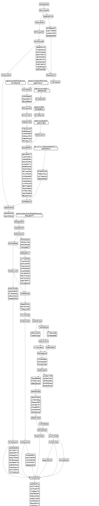

@startgit
* f9a38f60 Melk: Fix wrong dependency links. #718
* 0b11a046 Merge pull request #713 from eclipse/uru/forceStressLabel
|\
| * bd60607d Merge branch 'master' into uru/forceStressLabel
| |\
| |/
|/|
* | 30ac65e7 force.test: added plugin itself and tests for FGraph import
* | 85fcea49 force: fixed an issue where edges were imported twice
* | 453f5cd5 Merge pull request #711 from soerendomroes/sdo/issue688
|\ \
| * | 404a1dc0 core: Document content alignment properly #688
* | | f8df3c13 alg.rectpacking.test: initialize plain java layout
* | | 7460f6c0 alg.*: added nodeSize.minimum to supported options
* | | b931b96e alg.core.test: Added test checking node micro layout is executed for all layout algorithms supporting it
* | | d4574872 alg.rectpacking: #695 invoke node micro layout
* | | 3bf56f45 alg.radial: #695 invoke node micro layout
* | | 6b29f701 alg.mrtree: #695 invoke node micro layout
* | | e50e62e0 alg.force: #695 invoke node micro layout
* | | f487e001 core: added layout option to deactivate node micro layout
* | | 1d2d56a2 alg.common: created utility class to perform node micro layout
* | | e896a69b layered: Cache port sides after sorting ports #696
| | * 20388a97 stress: added an already supported layout option
| | * e4a73d9d stress: properly position edge labels
| | * cafe105f force: allow edge labels to be positioned inline
| | * bb2b9548 force: fixed an issue where a label's height was not considered
| |/
|/|
* | 4eafe0c5 core.service: workaround for broken eclipse plugin dependency on maven central
* | 738cdaa6 core: clear suffix cache when new layout options have been registered
| | * 0134aa78 (origin/uru/buildWorkaround) core.service: workaround for broken eclipse plugin dependency on maven central
| |/
|/|
| | * eaef7ec1 (origin/uru/clearSuffixCache) core: clear suffix cache when new layout options have been registered
| |/
|/|
* | 25336d3c Update MelkDocumentationGenerator.xtend
* | c2906eb3 alg.core: for UNDEFINED layout direction, stack node labels vertically when in the same cell
* | b5ef2b37 rectpacking: removed unused import
* | 9b1b88e9 graph.json: removed unneccesary import
| | * d8fe4c92 (origin/uruuru-patch-1) rectpacking: removed unused import
| | * b74d0069 graph.json: removed unneccesary import
| |/
|/|
* | 863ce164 layered: #690 adjusted layerChoiceConstraint option doc
* | b12274f1 layered: #690 Extended documentation of 'positionChoiceConstraint'
| | * 9558d821 (origin/uru/690) layered: #690 adjusted layerChoiceConstraint option doc
| | * 93788e7d layered: #690 Extended documentation of 'positionChoiceConstraint'
| |/
|/|
* | 99b60358 layered.test: add test case for #682
* | 7dcaaca5 #682: Correct node labels padding when direction is not RIGHT
* | b98daae3 layered.test: add test case for #680
* | 2366f489 #680: Fixes external port positioning
* | 260ac35f graph.json.test: #678 run PlainJavaInitialization only once
* | fdb942ad test: #678 prevent repeated registration of layout options
* | 9519cc17 Update algorithmstructure.md
| | * ce9c73b0 (origin/uru/issue678) graph.json.test: #678 run PlainJavaInitialization only once
| | * 45b2cafc test: #678 prevent repeated registration of layout options
| |/
|/|
* | baa68491 Build: Add a downloads management script. #675
* | eb305417 Update ci.yml
* | 14f75061 Update ci.yml
* | c86d928c Update ci.yml
* | e5c6185a Build: Update GitHub CI to new build. #672
* | a7e95171 Docs: Update to new build. #672
* | 8d98fa3b Build: Move additional build scripts to releng folder.
* | 006078a2 Build: Get rid of additional Maven repo for melk compiler. #672
* | 5b7ce55e Build: Move nightly build to downloads server. #672
* | 311061b0 Docs: Fixed release notes link.
* | c526e4d0 Added consider model order to release nodes.
* | fc61bc41 Docs: Update release notes.
* | 29409da5 Docs: Started writing release notes.
* | c167b1a9 Build: Fixed call to publication script.
* | db07abbd *: #657 removed outdated workarounds
* | 32a4386a Release: Bump version numbers on master.
* | 2795139a Build: Remove Javadocs. #185
* | fe039d4d Release: Extend documentation.
* | 8b31b7c1 Release: Extend release documentation.
| | * 3a030f12 (tag: v0.7.0, origin/releases/0.7.0) Docs: Release notes.
| | * b7640fcd *: #657 removed outdated workarounds
| | * 3983c0ca Build: Fixed call to publication script.
| | * c274aa3a Build: Remove Javadocs. #185
| | * 4b593943 Release: Release preparations.
| |/
|/|
* | 6f9d4fc2 *: #666 Adjusted code to removal of EdgeLP.UNDEF
|/
* 3ab6f30a core: #666 removed EdgeLabelPlacement.UNDEFINED
* 66f943f9 Layered: Fix hierarchy handling. #665
* dc1503c6 graph.json: dont set default edge label placement
| * f5acb077 (origin/uru/jsonImportEdgePlacement) graph.json: dont set default edge label placement
|/
* 90daed06 Update elkjs.yml
* 1be80625 Layered: Add user-defined direction priority to partition edges.
* b624a6c6 Merge pull request #640 from soerendomroes/sdo/preserveNodeEdgeOrder
|\
| * 0025480e Merge branch 'master' of git@github.com:eclipse/elk.git into sdo/preserveNodeEdgeOrder
| |\
| * \ 000b1129 Merge master into sdo/preservedOrder.
| |\ \
| * | | b46cdc6b Layered: Prevent randomization on first crossing minimization run #608
| * | | a562489f layered: Assert that cases that cannot occur really does not occur #608.
| * | | 013be6aa Layered: Even f order was preserved always do one forward sweep.
| * | | 2fb10043 Layered: Renamed preserveOrder to considerModelOrder #608.
| * | | 0aa8f904 Layered: Added preserve order test #608.
| * | | 978afdc0 Merged master into sdo/preserveNodeEdgeOrder
| |\ \ \
| * | | | d4fb8d9d layered: To preserve order crossing minimization should try a run with the preserved order first #608
| * | | | 8c72d17c layered: Added SortByInputModel processor dependencies #608
| * | | | d4d1b874 layered: Preserve order: Docu and cleanup #608
| * | | | 245da231 layered: Only set model order if order preserving is enabled #608.
| * | | | eda756e6 layered: Order outgoing ports by the node they connect to #608.
| * | | | 204b5ae4 layered: Add ordering option to primarily use edge order #608
| * | | | dcfeb476 layered: Preserve component ordering #608
| * | | | a4b4f2e4 layered: No crossing minimization if preserved order causes no crossings #608
| * | | | 0fa00a1a layered: Movd model order comparator in separate classes #608
| * | | | e0176f5c layered: Fixed node ordering for long edge cases #608.
| * | | | 7573621d layered: Preserve node and edge order #608
* | | | | 53554432 Layered: Implement review comments. #660
* | | | | 532fa7cb Layered: Fix cycles breaking layout partitions. #656
* | | | | e42595a8 layered: #628 added unit test
* | | | | 7a33a827 layered: #628 fixed greedySwitch during hierarchical layout
| |_|_|/
|/| | |
* | | | 8e8e68c7 alg.*: #657 removed outdated workarounds
* | | | 1c71b558 Layered: Unit test for #143 and #318.
* | | | 7ca34c0f Layered: Implement review comments. #653
* | | | e25ca59f Layered: Fix failing tests and wrong junction points. #318
* | | | 61ec6c22 Layered: Determine best position to split edge segments at. #318
* | | | cf644604 Layered: Resolve critical cycles by splitting hyperedge segments. #318
* | | | fca2d3bb Layered: Hyperedge segments can now be split. #318
* | | | 1b16b02f Layered: Fix bug. #318
* | | | 081574cb Layered: Find cycles between critical dependencies. #318
* | | | fe751553 Layered: Refactor edge segment cycle breaking. #318
* | | | afb78527 Layered: Detect critical dependencies that would cause edge overlaps. #318
* | | | 231d6e16 Layered: Refactored orthogonal edge routing. #318
| |_|/
|/| |
* | | 18996f4a Layered: Fix layer constraint processing. #623
* | | 4bab504c core: IndividualSpacings option impl IDataObject
* | | 86787635 *: adjusted code to 'spacing.individual' rename
* | | 746e1368 core: renamed 'spacing.individualOverride'
* | | f7c09c4b Merge pull request #635 from soerendomroes/sdo/compoundGraphVisitor
|\ \ \
| * | | 038614d3 layered: Interactive: Adapted to layered option changes.
| * | | 5a3bc254 Merge branch 'master' of git@github.com:eclipse/elk.git into sdo/compoundGraphVisitor
| |\ \ \
| | | |/
| | |/|
| * | | 91e89601 layered: Added description to interactive layered graph visitor.
| * | | ae31d09d layered: Explained pseudo spacing in InteractiveLayeredGraphVisitor.
| * | | a1569008 core.service: Correctly application of compound graph visitor.
| * | | c2535647 Moved interactive visitors, cleanup, use visitors as intended.
| * | | eebaa41b Added CompoundGraphVisitor and interactive layered/rectpacking graph visitors.
| | |/
| |/|
* | | 3df4918a Merge pull request #649 from eclipse/cds/issue594
|\ \ \
| * | | a86cc4e5 Layered: Improve spacing documentation. #594
| * | | 7f90f10e Layered: Comment-related spacings are now inherited. #594
| | |/
| |/|
* | | 7e0d4a0a Merge pull request #650 from eclipse/cds/issue588
|\ \ \
| |/ /
|/| |
| * | 174acafb Layered: Improve exception message. #588
| * | 476b2dd0 Layered: Proper error message for invalid hierarchical edges. #588
|/ /
* | 94233375 Merge pull request #647 from eclipse/uru/issue646
|\ \
| * | 17fa1eb3 layered: #646 rename options *ID -> *Id
* | | 2dfe2de7 docs: added afdesigner logo src
|/ /
* | f81bdac2 test: added hierarchical test cases wherever ptolemy models were used
* | 1334a2be Alg: Fix negative node margins. #616
* | 305a5d44 Layered: Remove problematic assertion. #599
* | 021e619e Layered: Fix DFS cycle breaker. #600
* | 3d9264a5 Merge pull request #642 from eclipse/uru/removeInheritDocs
|\ \
| * | 3aa6bbbd layered: fix invalid @Override
| * | 57e81cdc test,docs: adjusted further inheritDocs
| * | d6e95e1b plugins/*: removed superfluous 'inheritDoc'
* | | a43b17f8 layered: corrected invalid comment
* | | e62b5325 Core: Add convenience method to PortLabelPlacement.
* | | 0b3be94e Layered: Adhere to comment box spacings. #594
* | | b5642b2e Layered: Add unit test for comment box spacings. #594
* | | b63af0c0 Core, Layered: Add new comment-related spacings. #594
|/ /
* | 684950d2 core: validity check for {Port|Node}LabelPlacement
* | 2b3f7b0f core: revised small parts of port label placement
* | a79f3fbe core: introduced DeprecatedLayoutOptionReplacer
* | 99aea089 alg.common: #626 added test for PortLabelPlacement
* | e31de727 akg.common: #626 integrated ALWAYS_SAME_SIDE
* | c5add2f1 layered: #626 adjstd to new PortLabelPlacement
* | 6c244e62 alg.common: #626 adjstd to new PortLabelPlacement
* | 60630caf core: #626 streamlined PortLabelPlacement:
* | d9d67444 Merge pull request #639 from eclipse/uru/correctCopyrightTemplate
|\ \
| * | 16558d6d *: Corrected copyright template
|/ /
* | 2b18b5d2 Merge pull request #637 from eclipse/uru/updateTargetPlatform
|\ \
| * | 52e87d4f build: updated target platform
| |/
* | a197f289 Merge pull request #633 from eclipse/uru/jsonExporterHtmlEscape
|\ \
| * | 915dfef6 graph.json: disabled html escaping of exporter output
| |/
* | 1f581f9a Merge pull request #632 from eclipse/uru/nonProgrammaticPortIndex
|\ \
| |/
|/|
| * 4eb39f44 core: removed 'programmatic' from 'port.index'
|/
* 3766f254 graph.json.test: fixes after latest PR merges
* 4a86e41a layered: add 'baseValue' spacing configuration
* 20371802 layered: Added LayeredSpacings class
* 2151e519 core: Added ElkSpacings class
* 71d8e072 core.{service?}: moved OPTION_TARGET_FILTER to LayoutConfigurator
* 3d39b584 graph.json: Added im-/export of Individual spacings, and a test
* 596c3562 graph.json.text.ide: minor correction in proposal provider
* ce821245 graph.json.text: minor correction in formatter
* 5c8fd323 graph.json.text.ui: added proposal provider and convert action
* fba28516 graph.text.ide: use core's content assist for proposals
* c947bb12 graph.json.text: added proposal provider
* 8a4257ea core: added utility class generating layout option content assist
* 7c08390c graph.json.text.*: added to plugins pom and sdk feature
* f692e6ab graph.json.text: first implementation of a formatter
* dd23c34d graph.json.text: added sequencer, transient value service
* 65c880dd graph.json.text: added value converters and name provider
* d0fece65 graph.json.text: updated manifests and poms
* 4a0b180b graph.json.text: added generated code
* eeef6a07 graph.json.text: First reasonable grammar
* 6658a6a2 graph.json.text: initial project
* c5c114ae Merge pull request #615 from soerendomroes/graphvisitor
|\
| * 8952c6c8 Merge remote-tracking branch 'origin/master' into graphvisitor
| |\
| |/
|/|
* | abe283e7 website: another go at fixing the footer
| * a8d832ef Service: Remove unnecessary check.
| * 8770312a Allow IGraphElementVisitor to configure layouts.
| | * 14a471fd (origin/uru/issue620_indivSpac) elkt: added custom astfactory for individual spacings
| | * 70cf1763 elkt: added generated code
| | * 2f7fed43 elkt: added 'individualSpacing' block to grammar
| |/
|/|
* | 28b54552 website: adjusted card classes to bs4
* | 21ba2df9 website: corrected unit test note
* | c1cfcee2 website: make footer stick to bottom
* | eda96868 Merge pull request #619 from eclipse/uru/issue605_renameNorthSouth
|\ \
| * | a378173f layered: #605 added test for allowNonFlowPortsToSwitchSides option
| * | 72fc54c0 layered: #605 adjusted code to renaming of northOrSouthPort
| * | 0028ec40 layered: #605 renamed northOrSouthPort to allowNonFlowPortsToSwitchSides
* | | a0b9724d Merge pull request #613 from eclipse/uru/logos
|\ \ \
| * | | 499fd21f readme: added logo
| * | | 6b43df8c docs: added icons to navbar and jumbotron
| * | | 037202d9 docs: added logos
| * | | e1045537 docs: use bootstrap 4.0.0 instead of -alpha.6
* | | | 0180202e Update nightly.yml
* | | | 337a5dba Update ci.yml
* | | | 44ab3bbb actions: use Java 11 as well for elkjs
| |/ /
|/| |
| | | * c105e7b8 (origin/uru/issue576_labelNode) core.nodespacing: #576 further adjustments
| | | * 2402d990 core.nodespacing: #576 adjusted NodeMarginCalculator
| | | * e2bcc045 layered: #576 adjustment after 'labelNode' removal
| | | * aaf32e10 core: #576 turned 'spacing.labelNode' into 'nodeLabels.margin'
| |_|/
|/| |
* | | a3b9b656 actions: added java11 to cis
* | | fdf40bd5 Update ci.yml
* | | 91d36bba actions: added doc to nightly.yml
* | | 59833909 Update ci.yml
* | | 6bc59184 actions: added doc to ci.yml
* | | 9c5045b1 actions: added doc to elkjs.yml
| |/
|/|
* | 815cb62a Merge pull request #612 from eclipse/cds/issue611
|\ \
| * | cdf04627 Graphviz: Consistent algorithm names. #611
| * | 082d34ec More consistent algorithm names. #611
* | | 4803312e Merge pull request #609 from soerendomroes/fix-contentAlignment
|\ \ \
| * | | b7e08bf0 Box, rectpacking: Removed algorithm specific content alignment.
| * | | 8f61b79e ElkUtilTest: Corrected setting setting of content alignment.
| * | | 3bfe9fc9 Revert "Fix content alignment (box, rectpacking)."
| * | | f1c16e18 Added tests for translate with content alignment.
| * | | 14d405e0 Fix content alignment (box, rectpacking).
| | |/
| |/|
* | | 3dec348a Merge pull request #610 from eclipse/cds/issue603
|\ \ \
| |/ /
|/| |
| * | 216a7a04 Layered: Fix test issue. #603
| * | 8eb70db8 Layered: Fix too small compound node padding for node labels. #603
| * | d1d82f71 Layered: Add unit test for issue #603.
| |/
* | 37ae3cae Graph Text: Change default property proposal mechanism.
* | d65a9642 melk.doc: properly extract enum literals #604
|/
* e54c6ca8 Merge pull request #602 from eclipse/cds/issue601
|\
| * d0ee1ee4 Core: Register CoreOptions explicitly. #601
|/
* cfad8797 Merge pull request #597 from eclipse/cds/issue596
|\
| * 539e889e Layered: Fix port label size influencing hierarchical node margins. #596
| * 9d6f9be1 Layered: Simplify code and add graph logging to hierarchical layout.
| * 6c1a2bc8 Layered: Add unit test for #596.
|/
* d80fb19f Merge pull request #595 from eclipse/cds/issue546
|\
| * c7008a8e Docs: Improve wording.
| * 2effe3d8 Layered: Fix source coordinate offsets of hierarchical edges. #546
| * 3718460f Layered: Improved descriptions of debug graphs.
| * 5b7912dd Docs: Document hasProperty(...).
| * b2a0d8a8 Layered: Add unit test for #546.
* | a1cbd095 Merge pull request #593 from soerendomroes/sdo/rectpackingTargetWidth
|\ \
| * | 0255e0be Removed targetWidth default value.
| * | 591c4b4f Added target width to rectpacking. Fixed empty subrows in rectpacking during compaction.
* | | fe57d4a2 Merge pull request #584 from soerendomroes/sdo/fix583
|\ \ \
| * | | e30e49d0 Added rectpacking tests to pom.
| |/ /
| * | 6c225b12 Moved elk.rectpacking.test to elk.alg.rectpacking.test.
| * | 2bfe0de1 Merged master.
| |\ \
| * | | 28ca334d Fixed broken header and wrong automatic-modulname.
| * | | 8d0333dd Added test for rectpacking issue.
| * | | 778dbb4f Rectpacking: Use estimated width for node placement.
| * | | 230a40d2 Rectpacking: Moved OptimizationGoal enum to options package.
| * | | 64764ba8 Rectpacking: Do not override parent width with the estimated width.
| | |/
| |/|
* | | 2af10078 Merge pull request #572 from eclipse/issues/405
|\ \ \
| * | | a84b71c2 layered: added tests for #405
| * | | d72acf9d layered: fixed mirroring of port labels #405
* | | | 4e795f61 Layered: Fix partitions. #591
* | | | 0d945347 Layered: Tiny improvements.
* | | | 9b62fc27 Layered: Add unit test to test correct partitions. #591
* | | | 2afeb18e Layered: Fix PartitionPreprocessor to accept non-consecutive IDs. #592
* | | | 490e07e5 Layered: Changed test name to be more precise.
* | | | cae32ddb Merge pull request #590 from eclipse/uru/issue579
|\ \ \ \
| * \ \ \ f2319dae Merge branch 'master' into uru/issue579
| |\ \ \ \
| |/ / / /
|/| | | |
* | | | | b95f63dd Merge pull request #589 from eclipse/layeredMelk
|\ \ \ \ \
| |_|_|_|/
|/| | | |
| * | | | 32901416 layered: removed superfluous default on spacing.nodeNode
|/ / / /
| * | | ffeed684 layered: melk, converted tabs to spaces
|/ / /
* | | cec1ff01 layered: Fixed comment
* | | 80c750ff elkt: adjusted proposal provider for PARENTS/NODES targets
* | | 08ab5dea elkt: issue a warning if a specified 'key' is unknown #556
* | | 9682809e elkt: dynamically create properties for unknown 'key's #557
* | | 2b6d6e49 Merge pull request #582 from eclipse/uru/issue579
|\ \ \
| * | | f68f5184 *.melk: reformatted all files
| * | | 492a0239 core.meta: changed formatter
* | | | a96631e7 Merge pull request #569 from eclipse/uru/issue515
|\ \ \ \
| * | | | faa66320 layered: fixed polyline overlapping nodes #515
| * | | | fbe3a414 elk.core.math: Fixed double eq issue in ElkMath#intersects
* | | | | a91730de Merge pull request #581 from eclipse/uru/issue577
|\ \ \ \ \
| | |/ / /
| |/| | /
| |_|_|/
|/| | |
| * | | fd70c604 core: Corrected out-of-date comment
| * | | 75c84c56 alg.*: removed 'legacyIds' from melks #577
|/ / /
* | | 5305eeb6 Merge pull request #580 from eclipse/uru/issue578
|\ \ \
| |/ /
|/| |
| * | 721878fc core: removed 'programmatic' from a number of options
|/ /
* | d3e938d6 Merge pull request #568 from eclipse/uru/jsonExport
|\ \
| * | e27c602e graph.json: guard export of layout options agains npe #567
| * | ee804652 graph.json: omit empty junction points during export #559
| * | 9882d5bf graph.json: allow to switch between lenient/non-lenient parsing when importing #344
* | | 6daa7598 Merge pull request #571 from eclipse/uru/removeGraphitiConn
|\ \ \
| * | | 1e24420b conn.graphiti: adjusted doc after removal #536
| * | | 20556172 conn.graphiti: adjusted build files after removal #536
| * | | 9c0592eb conn.graphiti: removed feature #536
| * | | 4a630cd5 conn.graphiti: removed plugin #536
| | |/
| |/|
* | | a569aeca Merge pull request #573 from eclipse/uru/buildEa-1
|\ \ \
| * | | 3dd18f91 build: use 'enableAssertions' for tycho surefire
| |/ /
* | | 44542874 actions: be less verbose in log
* | | 389754e0 actions: ci uses -fae now
|/ /
* | 9a0f2c23 Merge pull request #566 from eclipse/cds/issue548
|\ \
| * | bcfab64e Layered: Fix NPE with fixed-position inside self loops. #548
| * | 7fdf5d1f Layered: Unit test for #548.
|/ /
* | 4a561278 Merge pull request #564 from eclipse/cds/issue562
|\ \
| * | 691af023 Core: Fix layout algorithm resolving with inside self loops. #562
| * | c505dc2b Core: Add unit test for #562.
* | | 460d2e8e Merge pull request #554 from soerendomroes/tooBigPositionConstraint
|\ \ \
| |/ /
|/| |
| * | b526c29a Merge branch 'master' into tooBigPositionConstraint
| |\ \
| * | | 9cb5395e Rectpacking: Handle too big position constraints.
* | | | bd186516 Merge pull request #561 from eclipse/cds/issue552
|\ \ \ \
| |_|/ /
|/| | |
| * | | 17e396e2 Layered: Fixed self loops in hierarchical graphs. #552
| * | | b8569800 Merge branch 'master' into cds/issue552
| |\ \ \
| |/ / /
|/| | |
* | | | 85bb5bdd Merge pull request #560 from eclipse/cds/issue541
|\ \ \ \
| |_|/ /
|/| | |
| * | | 43f5a39d Layered: Fix NPE in EndLabelSorter. #541
| * | | 3cdc28dc Tests: Add unit test for #541.
| * | | f62327a6 Tests: Add FileNameFilter to add several files at once based on names.
* | | | ff4bf8cf Changed openkieler urls to only kieler
* | | | 8c3535ca Docs: Update front page. #551
|/ / /
| * | f4604c63 Layered: Add unit test for #552
|/ /
* | 607111a8 Docs: Fixed broken image in reference documentation. #534
|/
* e63fac76 Merge pull request #545 from eclipse/uru/switch_tests_to_elkg
|\
| * 13624e1c test.framework: #537 only set default filter if none has been set before
| * c8b095ae Use elkg instead of elkt for ptolemy models during tests
* | 51ed0b04 Merge pull request #543 from eclipse/uru/fix_tests2
|\ \
| * | 7564ff2d layered.p4nodes: Fixed double equality comparison in assert
| * | 296d1125 Fixed an issue where test execution reported failed tests as successful
* | | 2f70e612 Merge pull request #538 from eclipse/uru/fix_tests
|\ \ \
| |_|/
|/| |
| * | 8cfcdec4 graph.json.test: actually build xtend-based tests during mvn compilation
| * | 5300bf29 layered.test: amended a test to initialize ElkReflect
| * | 46507b7c layered: removed an assertion that led to a failing test
| * | facbbdd5 layered.test: removed superfluous syso
|/ /
* | 0c8dd426 Merge pull request #535 from soerendomroes/contentAligment
|\ \
| * | 7f67fcc9 Set default content alignment to top left.
| * | c8a09a79 Added custom default for box, rectpacking for content alignment. Added content alignment to supported options for box and rectpacking.
| * | c5f5fe1d Revert "Added custom default for box and rectpacking contentAlignment."
| * | 35f24ab0 Merge branch 'contentAligment' of git@github.com:soerendomroes/elk.git into contentAligment
| |\ \
| | * | 7e8f3a70 Added getter for default content alignment.
| * | | cb59d9e6 Added custom default for box and rectpacking contentAlignment.
| |/ /
| * | f748dc3b Added content aligment for rectpacking and box.
* | | 5b3b1012 Merge pull request #539 from eclipse/uru/remove_warnings
|\ \ \
| * | | 28cf9a7e core.meta: use imgTitle variable as 'alt' for image
| * | | 15a354b0 *: Removed several warning that occur during compilation
* | | | ef88a463 Create ci.yml
* | | | c83383b8 Update nightly.yml
* | | | 7d5e21d7 Update nightly.yml
* | | | a1597487 Update elkjs.yml
| |_|/
|/| |
* | | 4e3e141b Update elkjs.yml
* | | 55467cf2 Update elkjs.yml
* | | a0aca05c Create elkjs.yml
* | | 916ea237 Update nightly.yml
* | | 3e433c94 Docs: More precise build documentation.
|/ /
* | 7fa9a3c0 Update nightly.yml
* | 2e08edd2 Update nightly.yml
* | 7b94f874 Update nightly.yml
* | 67caf2f2 Update nightly.yml
* | 0edc28a4 Update nightly.yml
* | f1876284 First shot at a nightly github action
* | b06ded20 Core: Remove import statement.
* | 2a676648 Core: Fix GWT compatibility.
* | 5e8233c4 Layered: Fix in-layer constraints between non-dummy nodes. #528
* | a5a72527 Layered: Code formatting.
* | 2037230f Layered: Add unit test for in-layer constraints. #528
* | dbf66d73 Merge pull request #529 from soerendomroes/rectPackingScaleMeasureFix
|\ \
| |/
|/|
| * a5c2a69f Merge branch 'master' into rectPackingScaleMeasureFix
| |\
| |/
|/|
* | c47e53ec Docs: Make Java build version more prominent.
* | 8b974a09 GRandom: Move graph generation out of UI plug-in.
* | f622fdb4 Test: Register meta data providers explicitly again. #402
* | 454c0309 Build: Fix build properties. #402
* | 88b0d8c1 Tests: Test layout algorithm registration. #402
* | 22a15740 Debug: New Project wizard creates service loader definition. #402
* | 943a8c62 Docs: Update to service loaders. #402
* | c5fdb6c0 Core: Migrate from extension points to services. #402
* | de729593 Tests: Test didn't pick up on LabelSorter renaming. #450
* | aa2ea5d7 Merge branch 'cds/issue450'
|\ \
| * | 4a9a38d6 Layered: Rename LabelSorter to EndLabelSorter. #450
| * | ba424eef Layered: Perfected LabelSorter. #450
| * | 9f32cae3 Layered: Sort end labels of different edges. #450
| * | 38c9ac3c Layered: Change internal handling of end labels. #450
| * | 52135a0e Layered: Add basic label sorter, along with unit test. #450
| * | e8c72303 Core, Alg: Expose label text in label adapters.
* | | 220f0e74 Docs: Add good path settings for unit test configurations.
|/ /
| * 625d631f FIxed scale measure calculation.
|/
* 5fe98ff3 Layered: Remove obsolete big nodes code. #523
* 6c71ed5f RectPacking: Fixed algorithm ID. #507
* 6470a0c2 Layer: Fix empty layers caused by LayerConstraintProcessor. #525
* bbea5044 Tests: Improve test descriptions.
* ab90738b Tests: Try running test classes in parallel.
* fb9426a4 Layered: Fix empty layers produced by InteractiveLayerer. #524
* acf12c2c Layered: Remove big nodes processing. #523
* d0f7c71e Layered: Migrate old tests from the KIELER days. #486
* 318df177 Tests: Default configuration can now add edge labels as well.
* 23bdb9cc Tests: Fix white box tests for multiple processors not working.
* 6861d738 Layered: Fix invalid component conflict.
* 76babe2a Layered: Give test plug-in access to internal classes. #486
* c6870ae1 Fix m2e error markers. #517
* fe68b1a3 Merge pull request #516 from sailingKieler/elkServicePlugin
|\
| * 80929ffc Service: changed super class of 'ElkServicePlugin' from 'AbstractUIPlugin' to just 'Plugin'
* | 3d72b616 Build: Migrate to Xtext 2.20. #500
* | 39d35f87 Setup: More setup fixes.
* | 4f28223b Setup: Setup improvements. #500
* | d50c1af3 Setup: Update to Xtext 2.20. #500
|/
* 883c156b Merge pull request #514 from sailingKieler/cs-platformRunningCheckInElkService
|\
| * fa07f4d3 Service: two minor changes facilitating usage without a running eclipse platform
|/
* 524db617 Docs: Add release 0.6.1 to website.
* aa9cf106 Merge pull request #513 from sailingKieler/cs-publishElkServiceFollowUp
|\
| * 522ecf99 Service: follow-up on "Service: dropped exclusion while publishing to maven central": some dependency refinements
* | 22598ab2 Merge pull request #512 from soerendomroes/master
|\ \
| * | dbb2ad0d Node expansion considers the minimum size of the parent.
* | | d0e41f61 Merge pull request #511 from sailingKieler/cs-publishElkService
|\ \ \
| | |/
| |/|
| * | a5ecaded Service: dropped exclusion while publishing to maven central
* | | 27312c7f Git: Ignore m2e preference files for now.
* | | 75062885 Merge pull request #510 from soerendomroes/master
|\ \ \
| |/ /
|/| /
| |/
| * 38b82483 Renamed bundle to rectpacking. Removed unnecessary emf references.
|/
* 38ddbaf8 Merge pull request #508 from eclipse/uru/fixElkjs
|\
| * 64d00710 Excluded debug output from elkjs build
|/
* 356d248e Docs: Update list of support channels.
* 6a066bcb Merge pull request #505 from soerendomroes/sdo/fix-rect-pack
|\
| * 6b0157d7 RectPacking: Cleanup.
| * b464df08 rectPacking: Corrected alogrithm label .
| * 0e1f2166 RectPacking: Improved logging. Resize parent correctly.
| * d8bf49ff Merge branch 'master' of git@github.com:soerendomroes/elk.git
| |\
| | * d3584ff9 RectPacking: Delete row optimization.
| * | b4010074 RectPacking: Delete row optimization.
* | | 69a27d63 Layered: Fixed hyperedges with merge edges set to true. #504
|/ /
* | a73c32fb Layered: Proper outside label placement for hierarchical ports. #491
* | 5fb648d1 Merge pull request #501 from soerendomroes/sdo/interactive
|\ \
| * \ aab3aad6 Merge branch 'master' into sdo/interactive
| |\ \
| |/ /
|/| |
* | | 369b1871 Docs: Slight improvements to build page.
* | | b35850ce Build: Extend build documentation.
* | | bdcb9748 Build: Update release documentation.
* | | 9d6f5924 Core: Migrate old tests to ELK. #486
* | | f0714e19 Layered: Have ELK Layered support more port label options. #492
* | | 2c0e7f8c Common: Fix bug that causes port label-edge overlaps. #491
* | | 2f2779e4 Common: Add port label placement configuration option. #492
* | | ed5a9616 Layered: Fixed compound nodes not being high enough. #502
* | | 3f425682 Common: Support next-to-port label placement for outside labels. #491
| * | 58bb505f Worked on cds remarks.
| |/
| * f602e843 Renamed packing strategy to optimization goal.
| * 52c306a8 Merge branch 'master' of git@github.com:eclipse/elk.git into sdo/interactive
| |\
| |/
|/|
* | a9b56b19 (origin/sdo/rectpacking) Merge pull request #499 from soerendomroes/sdo/rectPackingLeftToRight
|\ \
| | * 9f7e75d2 Added options for interactive mode for rectpacking and layered.
| |/
| * 61e80eb4 Corrected spelling mistake.
| * d120efd7 Reverted changes in target platform.
| * 1d575015 Fixed license header.
| * 11b136b5 Merged elk/master. Reverted change to targetplatform.
| |\
| |/
|/|
* | 9de7df63 Change how layout algorithms are resolved (#498)
* | c513c0f9 Core: Fixed box layouter not adapting content to min parent size. #489
* | e253c693 Core: Cosmetic updates to box layouter code.
* | 092b6c86 Merge pull request #493 from sailingKieler/graphAdaperts-NPE-fix
|\ \
| * | 01f9a962 fix of potential NPE in 'ElkGraphAdapters'
* | | 3b6d8d45 docs: Improve edge containment documentation. 425
* | | 100687ec Layered: Fix strange layering with hierarchical ports. #455
* | | 9ee24ae7 Layered: Improved priority option documentation. #473
* | | fc70b6a6 Algorithms: Improved priority option documentation. #473
* | | fc66c26b core.debug: Add timestamps to layout runs in debug views. #488
* | | 25eb0d92 Layered: Add unit test for #463.
* | | 04e2d8bc docs: Website build fix. #481
* | | a36f4f47 build: Fix website publishing. #481
* | | 9271193c docs: Change download links to HTTPS. #487
* | | cc64cd1b build: Build cleanup. #487
|/ /
* | 1941bf37 alg.common: Remove unused method.
* | 3c28c063 Merge pull request #484 from soerendomroes/master
|\ \
| | * f93dbd37 RectPacking corrected copyright.
| | * 59038ecf RectPcaking: Documentation for layout options.
| | * 99a356f3 Fixed compaction and expansion steps. Added javadoc.
| | * cc894834 Added rect packing to tests.
| | * 58d5f2ad Rectangle stuffing.
| | * 05967ef1 Fixed issues with compaction.
| | * d5475c91 compaction mostly works.
| | * cb06192d Removed updated settings.
| | * bd67c9ca Added blockrow abstraction.
| | * 1258ff92 Wip on one approach to rectpacking.
| | * 36e3bad2 Use node node spacing in area approaximation.
| | * 6c3c9864 RectPacking: Corrected special case mode description.
| | * cd38aa89 Rect pack special case packing modes.
| | * 91efbe52 RectPacking: Node spacing for expanding nodes and special case (and fixes).
| | * c4516132 REctPacking: Added node node spacing to approaximation and placement.
| |/
| * 13a5384e RectPacking: Initialize values with MIN_VALUE instead of -Infinity.
|/
* 3345a638 Merge pull request #477 from lredor/bug/476
|\
| * d86d98b0 Core: Fix multi-label alignment in vertical layout. #476
* | c52df7a8 Merge pull request #480 from lredor/bug/479
|\ \
| * | eb2173b2 Rectangle.Packing: Add class files in built jar file
|/ /
* | 91919393 Docs: Added 0.6.0 release page.
|/
* 84c6b07b General: Add contribution documentation.
* 7a213bd6 Core: Add option to keep FixedLayoutProvider from enlarging graphs. #475
* ac213349 Fix build.properties.
* ee4da269 Features: Fixed build.properties.
* 0fd20d89 Build: Fix XML file.
* 5e6b44c7 General: Fixed pom files.
* 11075714 Checkstyle: Update for new license headers.
* bd0d6526 Layered: Fix inline label alignment. #471
* 0c176d38 General: Fixed plugin.xml files.
* 4e545a51 General: Added missing file headers.
* d3f66f5f General: Update license files.
* 78a1ae73 General: Update top-level files.
* a3914f0c General: Update file templates for EPL 2.
* 926a90e7 General: Update genmodel licenses.
* 9288fa76 General: Migrate file headers to EPL-2.0.
* cf755c73 General: Remove contributors from file headers.
* acbd5c60 General: Add Maven builder to all projects (which Eclipse pretty much enforces anyway)
* a09a13b0 Layered: Respect self loop label size without label management. #470
* 065f8ac4 Merge branch 'cds/issue316'
|\
| * 2de31e60 Layered: Respect size constraints with INCLUDE_CHILDREN. #316
| * dea206a1 Layered: Add test for #316
| * 65c386ca Tests: Small refactorings.
* | 3d2712a6 Rectangle.Packing: Now part of the build...
|/
* 63e8607e Tests: Enable ticket-specific tests by giving them proper names.
* 9a1856b8 Release: Update version numbers.
* 2d0cbca7 Build: Add VERSION parameter to Jenkinsfile.
* 91db897d Tests: Fixed test dependencies.
* 6a5ce252 Build: Upate release documentation.
| * 436f3112 (tag: v0.6.1, origin/releases/0.6.1) Rectpacking: Fixed version
| * 648d8c7d Service: follow-up on "Service: dropped exclusion while publishing to maven central": some dependency refinements
| * f3901a87 Node expansion considers the minimum size of the parent.
| * 65371528 Service: dropped exclusion while publishing to maven central
| * 6267b89b Rectpacking: Port #510 to 0.6.1.
| * cf6e1631 Excluded debug output from elkjs build
| * 16090b2b RectPacking: Cleanup.
| * ea06c4cf rectPacking: Corrected alogrithm label .
| * 9adfb20b RectPacking: Improved logging. Resize parent correctly.
| * ee4aaefa RectPacking: Delete row optimization.
| * 4d46ef54 Layered: Fixed hyperedges with merge edges set to true. #504
| * 3caed775 Layered: Port interactive mode to 0.6.1. #501
| * e5465c20 Layered: Proper outside label placement for hierarchical ports. #491
| * 5a4c19f7 Layered: Have ELK Layered support more port label options. #492
| * faacc47c Common: Fix bug that causes port label-edge overlaps. #491
| * eb1d96a9 Common: Add port label placement configuration option. #492
| * 6957cf74 Common: Support next-to-port label placement for outside labels. #491
| * 60a57ca8 Tests: Disable test for 0.6.1.
| * 9a544982 Rect: Fixed rectangle packing algorithm.
| * bfd4325e Port of new RectPacking algorithm to 0.6.1
| * 452d47af Layered: Fixed compound nodes not being high enough. #502
| * 15e52444 Core: Fixed box layouter not adapting content to min parent size. #489
| * f5321037 Core: Cosmetic updates to box layouter code.
| * a635b970 fix of potential NPE in 'ElkGraphAdapters'
| * b819e865 Layered: Fix strange layering with hierarchical ports. #455
| * 8fcadb98 Layered: Improved priority option documentation. #473
| * 9cd03d05 Algorithms: Improved priority option documentation. #473
| * 5580ae6b Core: Fix multi-label alignment in vertical layout. #476
| * 70332642 build: Build cleanup. #487
| * db9f697c Release: Increase version numbers to 0.6.1.
| * 49ae04f7 (tag: v0.6.0, origin/releases/0.6.0) General: Add contribution documentation.
| * 07952f99 Core: Add option to keep FixedLayoutProvider from enlarging graphs. #475
| * b091f724 Fix build.properties.
| * 548c4882 Features: Fixed build.properties.
| * 488f3c8d Build: Fix XML file.
| * 3e5eb7bd General: Fixed pom files.
| * b0c07c0e Layered: Fix inline label alignment. #471
| * 557493d4 General: Fixed plugin.xml files.
| * 1d14de6f General: Added missing file headers.
| * a316700b General: Update license files.
| * ca099c5f General: Update top-level files.
| * 839170e9 General: Update genmodel licenses.
| * 3fc6bc4f General: Migrate file headers to EPL-2.0.
| * b5f4a821 General: Remove contributors from file headers.
| * fbd5f254 General: Add Maven builder to all projects (which Eclipse pretty much enforces anyway)
| * 3c107e91 Build: Fixed wrong build branch
| * 034fb5e7 Layered: Respect self loop label size without label management. #470
| * 2e489d56 Rectangle.Packing: Now part of the build...
| * b3bfcb10 Build: Default Jenkinsfile variable values.
| * e698dbe1 Release: Update Jenkinsfile.
| * 688d3d65 Release: Updated versions for 0.6.0.
|/
* c57a6588 Core: Test size estimation with inside port labels.
* 4cb968fd Layered: Remove unused option.
* 0c9a0e48 Core, Layered: Add node-self loop spacing. #467
* 167a80f5 Layered: Hopefully fixed tests.
* 42a9007e Layered: Remove superfluous sysouts.
* d4ed4160 Layered: Fixed NaN in interactive crossing minimization. #453
* 0f671d98 Fix ElkJS build problem.
* d36016d7 Layered: Fixed PolylineSelfLoopRouterTest.
* 7ae6df70 Merge pull request #465 from eclipse/cds/selfloops
|\
| * 2555ed65 Layered: Applied pull request comments. #446
| * 9b90fa69 Merge branch 'master' into cds/selfloops
| |\
| * | 7108d17d Layered: Case problems with file names.
| * | 12151918 Layered: Self loops play well with ports incident to regular edges. #419
| * | a08c6771 Layered: Removed old self loop code. #446
| * | 8675e279 Layered: Self loop documentation cleanup. #446
| * | f40cef1d Layered: Implemented spline self lopp routing. #446
| * | f90049ba Layered: Fixed small bug in NubSpline.
| * | a8d42cf9 Layered: Finished label placement and fixed self loop routing bugs. #446
| * | 1fb6102c Layered: Added basic self loop label placement. #446
| * | 8b4cc123 Layered: Preliminary self loop label placement. #446
| * | 2ae299e8 Layered: Small code fixes.
| * | ea0d92f3 Layered: Implemented polyline self loop routing. #446
| * | 89bda881 Layered: Self loops now respect and set node margins. #446
| * | e61b0730 Layered: Fixed loads of little bugs and activated new self loop code. #446
| * | e61f29d9 Layered: Orthogonal routing and self loop postprocessing. #446
| * | b8e1bc00 Layered: Self loops are now assigned to routing slots. #446
| * | 7592faf7 Layered: Refactored OrthogonalRoutingGenerator.
| * | d53993e0 Layered: Small changes to self loop code.
| * | 565f96dc Layered: Compute self loop routing directions. #446
| * | 348afbaf Layered: Small code improvement.
| * | ed97463c Layered: Started writing a new SelfLoopOrderer. #446
| * | 2de92f3f Layered: Wrote new SelfLoopPreprocessor. #446
| * | 60bb7533 Tests: Allow test plug-in to access layered-internal packages.
| * | 0e3d90f0 Ignore m2e settings.
| * | 0e2d9e4a Core: Add NullElkProgressMonitor to be used in unit tests.
| * | 0d95f19b Layered: More old self loop code marking. #446
| * | db4c1ff7 Debug: Better background colour of layout graph.
| * | c3e0e2a9 Layered: Mark old self loop code as being old. Fresh start! #446
| * | a52134a3 Layered: Self loop code refactoring. #446
| * | bc3985c9 Layered: Added unit test for #444
| * | 4a52c371 Core.UI: Graph rendering canvas was missing a bit of code.
| * | 234fbd21 Layered: Add unit test for #433.
* | | 94a2e62f Layered: Hierarchical port anchors were ignored. #447
* | | a0ece95d Layered: Edge sections had no incoming or outgoing shapes.
* | | 70281183 Core: Fixes box layout interfering with minimum node size. #457
| |/
|/|
* | 938283d7 #461: Consider port spacing when calculating graph height
* | 3564463b Merge pull request #460 from soerendomroes/patch-2
|\ \
| * | 0951b16c alg.disco.debug: Fix view icon not included
|/ /
* | 833fbd8b Merge pull request #436 from eclipse/uru/elkjs-fixes
|\ \
| * | 44b23a3c Corrected a single elkjs exclude
| * | 3c82e4be Added workaround for elkjs that allows to measure execution times in js
| * | e0733d8d Initial changes towards GWT compatibility
| * | f4807193 core.graph.json: Removed warnings from xtend code
|/ /
* | 5c523373 Enhanced ConvertGraphHandler to remove data from converted graphs
* | 92444a02 Merge pull request #451 from eclipse/msp_navigateRenderer
|\ \
| * | e756a257 Implemented zooming and panning for GraphRenderingCanvas
|/ /
* | c136a061 Merge pull request #449 from lredor/bug/automaticallySelectLoadedFile
|\ \
| |/
|/|
| * b6b3596a Debug: Allow to drag'n'drop a file from Project Explorer to Layout Graph view
| * 22bc989e Debug: Select the loaded file in the Layout Graph view
| * a6329921 Debug: Let the view refresh before changing the selection
|/
* f6747dc9 Layered: Fixed end labels with inverted ports.
* 49076775 Layered: Some formatting.
* dc5cef58 alg.test: Export public API packages.
* 92c4371e Tests: Memory improvements in the test framework. #442
* 92c8a47a Tests: Hopefully fix DirectLayoutTest. #399
* 32f42d7c Tests: Moved tests and fixed package names.
* 46bde712 Tests: Fixed unit tests. #399
* 583481ac Tests: Fixed more layered tests. #399
* f80218be Merge pull request #440 from soerendomroes/sdo/issue-411
|\
| * eb8f316d Removed unnecessary setting of anchor.
| * 0da91163 Added doc for setSide in LPort.
| * 5ae7d031 Automatically change port anchor when changing side.
* | fe54c51c Tests: Fixed shared tests.
* | f9d72634 Tests: Fixed warning. #442
* | b907c7a9 Tests: New layout test framework #442 (#443)
* | c0e688c8 Tests: Add initialization to failing tests.
* | 5324aec0 Build: Fixed wrong test path.
* | f9cc54ea Tests: Fixed wrong test graph creation. #399
* | 92d8e58d Build: Collect JUnit test results.
* | a3da4ba9 Core: Fix NPE in LayoutOptionProxy.
* | f5908fac Build: Gather JUnit test reports.
* | d595b9d7 Build: Separate integration tests from deployment.
* | 72715afa Build: Fixed jarsigner version.
* | 16f84fc1 Build: Increment build tool versions and enable unit tests.
* | c861a64e Docs: Add documentation on how to run unit tests.
* | 610611c2 Tests: Fixed test problems.
* | ee68ae87 Build: Update target platform to 2019-06 and replace win32 by win64.
* | 66c855d2 Test: Update test plug-in versions.
* | 185b024e Setup: Add 2019-06 target platform.
* | e068f89e Build: Add Jenkins pipeline.
* | 22654d91 Build: Improved the website publisher script a little.
* | ccdf02d6 Fixed broken indentation.
* | 7cb16365 Merge pull request #438 from soerendomroes/sdo/issue-429
|\ \
| * | d373e590 Fixed typo.
| |/
| * b29fd0f0 Improvement: Added Automatic-Module-Name to all manifests.
|/
* ab1ddab8 Layered: Tiny code improvement.
* 9adcf514 Merge pull request #437 from lredor/lredor/bug/DebugStoreOption
|\
| * df0c4b48 Debug: Consider "elk.debug.store" preference in LoadGraphAction
|/
| * f90441b5 (origin/cds/sequence) Merge branch 'master' into cds/sequence
| |\
| |/
|/|
* | 64e4b8c9 Core: Fixed LoggedGraph.
* | 405a8fd5 Docs: Document the new layout algorithm project wizard.
* | 3fdea2b2 Docs: Documented the new debugging framework.
* | d9328f70 Debug: Tiny refactorings.
* | fc57f57b Debug: Compress log folders from the UI. #292
* | 9454997d Debug: Fixed small problems.
* | 26c61c81 Merge pull request #431 from sailingKieler/master
|\ \
| * | cb503ef9 Include port labels during node scale application, see #430
* | | f2feabad Layered: Use new debugging infrastructure.
* | | 5838f9f5 Core: Major overhaul of debugging infrastructure (#292)
|/ /
* | f85f8622 Debug: New layout algorithm project wizard. #29
* | fefe2ca0 #417: Don’t create self-loop edges for edges that are not self-loops
* | bd4e8531 #413: Don’t hide ports with fixed position during self-loop processing
* | 14f76ac1 Merge pull request #410 from Bralic/master
|\ \
| * | 2ae9ef0c alg.disco.debug: The View icon is not displaying properly
* | | efcce42b Fixed: Minor port label placement code strangeness.
|/ /
* | 9a87764f Merge pull request #409 from eclipse/proxyNullGuards
|\ \
| * | d413b61d Added null guards for IPropertyValueProxy processing
* | | aae11c6e Merge pull request #408 from eclipse/issue407
|\ \ \
| * | | 4e96af71 #407: Create SelfLoopLabels only for edges that are actually self-loops
| |/ /
* | | 493ff90e Website: Added release 0.5.0.
|/ /
* | 6b6c11b3 Build: Upgraded versions to 0.6.0.
* | 444f4fdd #399: Load LayoutMetaDataService to initialize cloning functions in tests
* | caf15731 Build: Updated release readme.
| * 8457bfcd Sequence: Finished support for areas.
| * 9ec3b3bb Sequence: Fixed handling of nested areas.
| * 0af7f6ba Sequence: Implemented simple area x coordinate computation.
| * 0a84006c Sequence: Removed old y coordinate calculation code.
| * 1a04c8e6 Sequence: Compute y coordinates of combined fragments.
| * bec0f28b Sequence: Fixed overlapping comments.
| * 907c3375 Sequence: Finished support for comments.
| * 215e1e58 Sequence: Started support for comments.
| * cb05988a Sequence: Fixed message list sorting at lifelines.
| * 22b64026 Sequence: Fixed destruction events.
| * 25e3d811 Sequence: Started writing the new element placement code.
| * 6a3271fc Sequence: Got rid of superfluous white space.
| * 4cc97e30 Merge branch 'master' into cds/sequence
| |\
| * | e3f514aa Sequence: Split coordinate assignment into two phases.
| * | 0e1636f0 Core: Fixed duplicate set method in KVector.
| * | ee71114f Merge branch 'master' into cds/sequence
| |\ \
| * \ \ e0b8a7ab Merge branch 'master' into cds/sequence
| |\ \ \
| * | | | 96235174 Sequence: Fixed option config.
| * | | | 2d28af27 Sequence: Fixed areas extending over the interaction's borders.
| * | | | 32b06fb6 Sequence: Fixed performance of cycle breaker.
| * | | | 4108daba Sequence: Fixed issues with more than two nested areas.
| * | | | 19b62f5d Sequence: Added switch to turn off vertical compaction.
| * | | | 914f79c6 Sequence: Fixed handling of nested areas.
| * | | | 72e026c8 Sequence: Areas now cover lifeline headers of created lifelines.
| * | | | 45c66350 Merge branch 'master' into cds/sequence
| |\ \ \ \
| * | | | | 2356313e Website: Added page for new release.
| * | | | | 41ab2bf6 Sequence: Improved the layering algorithm yet again.
| * | | | | 902cd7ef Sequence: Improved algorithm introduced in previous commit.
| * | | | | 1b2232fe Sequence: Fixed remaining part of the overlapping areas problem.
| * | | | | 24b203b1 Sequence: Fixed big problem with messages running into areas.
| * | | | | 7a9b34e1 Sequence: A number of improvements to ShortMessageLifelineSorter.
| * | | | | 086ec2d5 Sequence: ShortMessageLifelineSorter now works in the first phase.
| * | | | | edfffead Sequence: New layout option.
| * | | | | 9ec4e5d7 Sequence: Simplified LayerBasedLifelineSorter.
| * | | | | c1d5aa68 Sequence: LayerBasedLifelineSorter works with the new restructuring.
| * | | | | 5e6a201b Sequence: New intermediate processor created the layered graph.
| * | | | | 9ca79cca Sequence: Moved lifeline sorting to the front.
| * | | | | d50a19ad Sequence: Adapted to alg.common.
| * | | | | a1855a4e Merge branch 'master' into cds/sequence
| |\ \ \ \ \
| * \ \ \ \ \ dde0eeb2 Merge branch 'master' into cds/sequence
| |\ \ \ \ \ \
| * | | | | | | d6abeaad Sequence: Added ToDo.
| * | | | | | | e3f250a8 Sequence: Moved LGraph creation to phase 1.
| * | | | | | | 04957b75 Sequence: Support for label management.
| * | | | | | | 1707dfc5 Sequence: Use core ELK algorithms to calculate comment size.
| * | | | | | | c8120a77 Sequence: Support different label sides and inline labels.
| * | | | | | | 7e063f59 Sequence: Fixed and improved comment placement.
| * | | | | | | a417bd09 Sequence: Started repairing comment node placement.
| * | | | | | | caf46200 Sequence: Improved labeling of lost and found messages.
| * | | | | | | 23290314 Sequence: Fixed broken placement of areas with self messages.
| * | | | | | | 6b471df6 Sequence: Fixed lost and found messages.
| * | | | | | | 81a86a15 Sequence: Changed how area paddings are handled.
| * | | | | | | 2cc078bf Sequence: Message labels are now represented in the SGraph structure.
| * | | | | | | 4b7c8833 Core: Added another set method to KVector.
| * | | | | | | 9bb7ee44 Merge branch 'master' into cds/sequence
| |\ \ \ \ \ \ \
| * | | | | | | | 3b1ba81f Sequence: Refactored layout options.
| * | | | | | | | 6c8fa08e Sequence: Turned several constants into proper layout options.
| * | | | | | | | d9e07d06 Sequence: More refactoring.
| * | | | | | | | 65742ade Sequence: Almost finished with first refactoring run.
| * | | | | | | | 0b4c0963 Sequence: Further refactoring.
| * | | | | | | | 93d39dd0 Sequence: Moved classes to graph data structure.
| * | | | | | | | 4d626870 Sequence: More refactoring, this time of a rather simpler nature.
| * | | | | | | | 88802776 Sequence: Refactored ElkGraphImporter.
| * | | | | | | | 742223fd Sequence: Refactored SGraph data structure.
| * | | | | | | | 70405a0e Merge branch 'master' into cds/sequence
| |\ \ \ \ \ \ \ \
| * | | | | | | | | 5da17a79 Sequence: Moved and registered meta data class.
| * | | | | | | | | a7d6e368 Sequence: Renamed and removed the occasional thing.
| * | | | | | | | | 438561e0 Sequence: Migrated to AlgorithmAssembler and IGraphTransformer.
| * | | | | | | | | 77f937e7 Sequence: Renamed properties package to options.
| * | | | | | | | | b16ac475 Sequence: Plug-in compiles now. Time to overthrow everything.
| * | | | | | | | | e2811e2a Sequence: Initial contribution of sequence diagram layouter. #77
| | | | | | | | | | * b0be67dc (tag: v0.5.0, origin/releases/0.5.0) Release: Update update site description.
| | | | | | | | | | * 94b26f14 Release: Removed -SNAPSHOT and .qualifier from version numbers.
| |_|_|_|_|_|_|_|_|/
|/| | | | | | | | |
* | | | | | | | | | 43eb26f7 Fixed: Problem with outer nodes and reversed edges. #377
* | | | | | | | | | 673dd5d0 Removed: Neon target platform. #398
* | | | | | | | | | d933082a Fixed: Issues with stacked edge labels. #403 #404
* | | | | | | | | | 8ffa65a8 Fixed: Further occurrences of "KLay". #400
* | | | | | | | | | 204708c5 Changed: Cleaned up the LGraph code a bit.
* | | | | | | | | | 6d30f413 Fixed: Removed mentions of old projects and algorithms. #400
* | | | | | | | | | f998386e Layered: Fixed problem with port constraints and compound nodes. #401
* | | | | | | | | | ae3c66c8 Merge pull request #396 from eclipse/msp_issue352
|\ \ \ \ \ \ \ \ \ \
| * | | | | | | | | | 9c913925 #352: Fixed combination of nested graph with external ports and self-loops
* | | | | | | | | | | 2929b17e Render real splines in GraphRenderer
* | | | | | | | | | | c580f950 Regenerated alg.graphviz.dot
* | | | | | | | | | | 08182f54 [setup] Added LSP4J to target platform
* | | | | | | | | | | 772a120c Regenerated core.debug.grandom language
* | | | | | | | | | | b6c4a0ad Regenerated core.meta language
* | | | | | | | | | | b0ed6ce4 [tests] Fixed compile errors
|/ / / / / / / / / /
* | | | | | | | | | 430c4cce [layered] Several improvements
* | | | | | | | | | da7132f1 Setup: Updated Xtext repository in target platform
* | | | | | | | | | fc71ea0f Build: Removed another copy of the workaround.
* | | | | | | | | | fc980995 Build: Removed workaround for previous Xtext versions.
* | | | | | | | | | 9a20baf3 Build: Increased Xtext version in pom.xml.
* | | | | | | | | | 2bfa4ec4 Build: Increased minimum required version of org.objectweb.asm.
* | | | | | | | | | 196b505b Setup: Increased Xtext version to 2.16.
* | | | | | | | | | c1567795 Merge pull request #391 from dalu2104/353_melk_autoformatting
|\ \ \ \ \ \ \ \ \ \
| * | | | | | | | | | fd2d6be9 Meta: Got rid of weird formatting.
| * | | | | | | | | | cf78c3a2 Meta: Implemented feedback.
| * | | | | | | | | | c7c7df8e Meta: Finished implementation of formatter.
| * | | | | | | | | | 8a6f93a7 Meta: Completed meta data formatter.
| * | | | | | | | | | 674a9ef9 Meta: First implementation of a meta language formatter.
| | |_|_|_|_|_|_|_|/
| |/| | | | | | | |
* | | | | | | | | | e018442e Merge pull request #383 from dalu2104/rectangle_packing_implementation
|\ \ \ \ \ \ \ \ \ \
| * | | | | | | | | | 37fccab0 Algorithm: Incorporated more feedback.
| * | | | | | | | | | 8a0e016c Algorithm: Cleanup after feedback.
| * | | | | | | | | | bc917044 Algorithm: Implemented a new algorithm for packing rectangles.
| |/ / / / / / / / /
* | | | | | | | | | 21cd7e47 build: Fixed git repository URL.
* | | | | | | | | | 98d25485 Docs: Fixed typo #384
|/ / / / / / / / /
* | | | | | | | | eb4d0686 GRandom: Fixed artifact IDs.
| |_|_|_|_|_|_|/
|/| | | | | | |
* | | | | | | | 13b80feb Tests: Prepared pom files for activating unit tests. #363
* | | | | | | | 89fe0f98 Tests: Cleaned up imports.
* | | | | | | | da14e4b4 Docs: Unit test documentation. #363
* | | | | | | | 001354cd Adds a unit test framework. #363 (#373)
* | | | | | | | 9f01f757 Docs: Improved documentation based on real-world feedback.
* | | | | | | | a87477e3 Fixed: Spline router layer spacing with hierarchical ports. #371
* | | | | | | | a40790e2 Debug: Fix obsolete layout graph view file types. #370
* | | | | | | | badd4ce7 Layered: Fixed IOOBE. #368
* | | | | | | | 0dfec70a Docs: Maven version
* | | | | | | | e9ae57e2 Layered: Fix NPE in the absence of self loops.
* | | | | | | | 4c2e9f1b Merge pull request #365 from jbeard4/fix-elkjs-47
|\ \ \ \ \ \ \ \
| * | | | | | | | e46cf377 Fix bug
| * | | | | | | | 77ab02f0 Move intersectsRect static function from ElkMath to ElkRectangle.intersects method
| * | | | | | | | 417e36ab Fixes OpenKieler/elkjs#47
|/ / / / / / / /
* | | | | | | | 8b194eda Layered: Fixed self loop label placement. #360
* | | | | | | | 18b518de Layered: Simplified self loop code. #360
* | | | | | | | 8416f5d1 Layered: Fixed self loop distribution strategies.
* | | | | | | | dbb264de Layered: Proper alignment for stacked self loop labels. #360
* | | | | | | | 5ca9cddf Layered: Moved the SelfLoopLabelPosition class. #360
* | | | | | | | 7e466939 Layered: Greatly simplified label candidate position generation. #360
* | | | | | | | 5733cad6 Core: Added new constructor to KVector.
* | | | | | | | 4761ae19 Layered: Lots of self loop label refactoring.
* | | | | | | | 111efa9c Layered: Self loop refactoring.
* | | | | | | | e1a21375 Layered: Removed obsolete intermediate processor.
* | | | | | | | 54b8fe18 Layered: Missed one debug output in the previous commit. #360
* | | | | | | | 6b0d8f7c Layered: Fixed label placement randomness. #360
* | | | | | | | 9663a8c3 Added debug output.
* | | | | | | | 5cc3e67f Layered: Self loop labels are now spaced properly. #128
* | | | | | | | 6d8a31fe Layered: Support missing node label padding.
* | | | | | | | e1a7283d Layered: Polyline edge router generated short horizontal segments. #341
* | | | | | | | b54be1b4 Layered: Fixed on-edge labels with polyline edge routing. #347
* | | | | | | | 486941a0 Layered: Fixed warning.
* | | | | | | | 90a41428 Removed @kieler.rating and @kieler.design. #358
* | | | | | | | 3fc8ea01 Merge pull request #359 from eclipse/cds/selfloops
|\ \ \ \ \ \ \ \
| * | | | | | | | 7a046523 Layered: Proper self loop support. #79 #302
|/ / / / / / / /
* | | | | | | | 5ccf8e13 Docs: New page for release 0.4.1.
* | | | | | | | b8cb30cf Meta: More information on option dependencies. #336
* | | | | | | | dc7b2ecd Meta: Restructured MelkDocumentationGenerator.
* | | | | | | | edf19838 Docs: Generate additional reference metadata to fix wrong IDs. #354
* | | | | | | | 8182839b Docs: Completed documentation of node size options.
* | | | | | | | dcbd943b Build: Removed unnecessary repository definitions.
* | | | | | | | d31985aa Build: Re-enabled Maven Central for plug-ins.
* | | | | | | | fe9e345a Build: Remove explicit Maven Central repository.
* | | | | | | | c58c039f Build: Use a different repository for dependencies.
* | | | | | | | 3bf36630 #356: Lower the priority of the GMF layout provider for ELK
* | | | | | | | 1b7ad632 Docs: Added proper node size constraint documentation.
* | | | | | | | 79f4525b Build: Another repository...
* | | | | | | | 86811ef7 Build: Changed Maven Central URL.
* | | | | | | | 711218b2 Build: Updated to Tycho 1.2.
* | | | | | | | 39ee42f7 Build: Added runtime environment info.
* | | | | | | | 741e1c1a Graph JSON: Relaxed Google GSON dependency version.
* | | | | | | | efb9389d Plugins: Fixed Xtext build dependencies.
* | | | | | | | 1c6c5f6b Target Platform: Updated to Photon.
* | | | | | | | ad5b5ae2 Setup: Updated to Photon.
* | | | | | | | d58c4670 Common: Removed unnecessary import.
* | | | | | | | 1f4ceda1 Build: More Xtext dependency fixes.
* | | | | | | | 69ca3b62 Build: Fixed workaround.
* | | | | | | | c52d0ebf Build: Possible fix for Xtext build dependency problem.
* | | | | | | | dc72df4b Docs: Added details about metdata class names.
* | | | | | | | d242ee57 layered: moved bk's EdgeStraighteningStrategy option to proper pkg #351
* | | | | | | | 80db8b85 Meta: Another fix for Hugo identifier clashes. #313
* | | | | | | | efb6d754 Fixed: Duplicate Hugo page identifiers. #313
* | | | | | | | 521e6b67 Fixed: Component groups connected to all four port sides. #342
* | | | | | | | 64258f3f Docs: Improved edge containment documentation. #343
* | | | | | | | d9e1c732 Docs: Refer to build on Maven central. #334
* | | | | | | | 8001360a build: Fixed plugin execution order.
* | | | | | | | a554926c Build: Added documentation on how to perform releases.
* | | | | | | | 39d161ea Docs: Release notes for release 0.4.0.
* | | | | | | | ee9bca15 Merge pull request #346 from eNBeWe/nbw/346-JunctionPoints
|\ \ \ \ \ \ \ \
| * | | | | | | | 9a2f6c4b ElkUtil: Filter unnecessary bend points in Junction Point calculation
|/ / / / / / / /
* | | | | | | | d78c08b6 graph.text: always add groups to option id suffixes
* | | | | | | | 58daa6fd layered: added breakingpoint<->label spacing
* | | | | | | | 91b8d202 core: increased default component spacing
* | | | | | | | 150fc359 Merge pull request #339 from eNBeWe/master
|\ \ \ \ \ \ \ \
| * | | | | | | | 6ec97bc2 setup: Fixed p2 URL for 0.4.0 stream
|/ / / / / / / /
* | | | | | | | 1b1f73b8 Website: Updated website.
* | | | | | | | 2775f102 layered: relaxed partitioning requirements #338
* | | | | | | | 4b71f783 Setup: Added missing release streams.
* | | | | | | | fa180b7d Release: Increased version numbers.
| | | | | | | | * 7ec77177 (tag: v0.4.1, origin/releases/0.4.1) Build: Increase version to 0.4.1.
| | | | | | | | * 29adaafc #356: Lower the priority of the GMF layout provider for ELK
| | | | | | | | * f6bf90a0 Plugins: Fixed Xtext build dependencies.
| | | | | | | | * 86bc3d4c Build: More Xtext dependency fixes.
| | | | | | | | * b1def4e6 Build: Fixed workaround.
| | | | | | | | * 4ca52ff2 Build: Possible fix for Xtext build dependency problem.
| | | | | | | | * 71392845 layered: moved bk's EdgeStraighteningStrategy option to proper pkg #351
| | | | | | | | * 30bed302 (tag: v0.4.0, origin/releases/0.4.0) Build: Change plugin execution order.
| | | | | | | | * 8b05b5d8 Release: Removed snapshot from version numbers.
| | | | | | | | * 88aa3bd1 Docs: Release notes for release 0.4.0.
| | | | | | | | * 224f77dc ElkUtil: Filter unnecessary bend points in Junction Point calculation
| | | | | | | | * 124f5910 graph.text: always add groups to option id suffixes
| | | | | | | | * 5d4de33b layered: added breakingpoint<->label spacing
| | | | | | | | * bbd9503b core: increased default component spacing
| | | | | | | | * 62274e3e Website: Updated website.
| | | | | | | | * bb5eb78b Release: Updated update site information.
| |_|_|_|_|_|_|/
|/| | | | | | |
* | | | | | | | 2c5b1387 layered.wrapping: execute validify during multi-edge only if requested
* | | | | | | | fa89f2ad Merge pull request #321 from eclipse/uru/portOrder
|\ \ \ \ \ \ \ \
| * | | | | | | | 3b86f2bf layered: allow to configure the default sorting of fixed side ports
| * | | | | | | | 7c10b950 layered: preserve the edge order during import
* | | | | | | | | 772fa263 layered.bk: replaced to linear time calls by constant ones
* | | | | | | | | 611c367f layered.bk: removed unused code
* | | | | | | | | 6b11b448 docs: #294 added example layout screenshot
* | | | | | | | | 712ab286 Core: Fixed layout properties view with enum sets. #311
* | | | | | | | | 3250c544 Merge pull request #331 from eclipse/msp_layoutConfigManager
|\ \ \ \ \ \ \ \ \
| * | | | | | | | | 1ab31f36 Removed unused 'recursiveOnly' parameter from LayoutConfigurationManager.configureElement()
|/ / / / / / / / /
* | | | | | | | | 50e8adef core.service: #325 moved 'addDiagramConfig' to avoid concurrency issues
* | | | | | | | | b7699e5d layered: #216 fixed wrapping with sloppy splines
* | | | | | | | | a9e345aa layered: #216 fixed wrapping in combination with splines
* | | | | | | | | 1d675d49 layered: added a couple of requirements to its melk
* | | | | | | | | ca6e7f65 melk: #38 make generated dependency constant names unique
* | | | | | | | | 25d74c39 layered.docs: removed a space that broke hugo's md rendering
* | | | | | | | | 96437d00 layered.wrapping: minor changes
| |_|_|_|_|_|_|/
|/| | | | | | |
* | | | | | | | 9b912c85 mrtree: removed direction from supported layout options
* | | | | | | | 5a3554a8 stress: fixed an issue with isolated nodes enforcing a div by zero #323
* | | | | | | | 619f4c6f stress: minor optimizations according to rvh
* | | | | | | | 0180cd54 Docs: Documented the ELK Graph meta model.
* | | | | | | | b4d5288b Docs: Expanded and updated documentation.
* | | | | | | | 88385208 Wrote tests for RecursiveGraphLayoutEngine, LayoutOptionValidator, GraphValidator
* | | | | | | | 7cee43fd [elk.graph] Cleaned up generated code
* | | | | | | | c505ff34 #246: Implemented layout algorithm resolution and algorithm-specific validation
* | | | | | | | 58e2830f Moved validation-specific code to new subpackage
* | | | | | | | 4998f4b0 #246: Added validator property for layout algorithm meta data
* | | | | | | | 306de897 Implemented a simple connector that displays a dialog for the content of an .elkt file
* | | | | | | | 1b357681 #246: Implemented basic graph validation
* | | | | | | | 7ef6574b Setup: Replaced GMF Tooling reference with GMF Runtime.
* | | | | | | | cfcf0a45 Setup: Added Oxygen repositories.
|/ / / / / / /
* | | | | | | a047bda8 layered: new strategy to transform the input graph to left-to-right #310
* | | | | | | 941e33cb layered: minor fixes in melk
| |_|_|_|_|/
|/| | | | |
* | | | | | 011d990a Website: Added page for new release.
* | | | | | d82412e0 elk.layered: fixed an issue with NodeLabelPlacement and layout direction
* | | | | | d175e933 elk.layered: fixed formatting issues
* | | | | | 6ab87795 Website: Fix reference index pages.
* | | | | | 11cec2f1 elk.layered: #308 be more permissive when merging hyperedge dummies
* | | | | | 77cd0718 Core: Cleaned up preference page structure. #257
* | | | | | 35cb2812 Meta: Attempt at fixing the reference documentation. #268
* | | | | | df2a353a graph.json: dont create empty junction point object
* | | | | | 0d1565c5 Layered: Fix minimum size calculation for hierarchical nodes. #304
* | | | | | 6c22047e Merge pull request #303 from Bralic/master
|\ \ \ \ \ \
| * | | | | | 31df2ed8 conn.gmf: Fix to allow Papyrus' MultidiagramEditors
| | |_|_|_|/
| |/| | | |
* | | | | | c3521414 alg.radial: removed superfluous imported packages
* | | | | | b0da4523 elk.layered: prevent hiding ports during spline self loop handling #288
|/ / / / /
* | | | | b3391330 Core, common: Revert ENLARGE_ONLY node size option. #263
* | | | | 9aff0c8a Common: Fixed port alignment with just one port. #269
* | | | | 4ab27630 Layered: Fixed exception for external ports with undefined side. #296
* | | | | 1ba4031f Layered: Fix inside self loops with ports on the same side. #297
* | | | | f048ce21 Layered: Fix AIOOBE for inside self loops. #298
* | | | | 25aac782 Common: Fixed port spacing issue. #299
* | | | | 506c43d9 Core: Moved overlap removal to alg.common. #290
* | | | | 21cc35f3 Algorithms: Adapted algorithms to preceding commit. #290
* | | | | f4fbc98c Core: Moved algorithms to alk.common. #290
| |_|_|/
|/| | |
* | | | d97237b8 Merge pull request #295 from Bananeweizen/removeGuavaUpperVersionRestriction
|\ \ \ \
| * | | | 57cff5a6 remove version restriction on Google Guava
|/ / / /
* | | | 06b4ed8d Merge pull request #285 from eNBeWe/master
|\ \ \ \
| * | | | c3849a10 ElkUtil: Reactivated Junction Point detection for fixed layout
* | | | | 7d19f083 Merge pull request #286 from eNBeWe/nbw/spore.test
|\ \ \ \ \
| |/ / / /
|/| | | |
| * | | | a872daf0 spore.test: Fixed imports for generated Spore options
|/ / / /
* | | | 88ecf653 Build: Adapted names in pom files.
| |_|/
|/| |
| | | * 3751262d (origin/cds/improvedLabelDummySwitching-OptCPLEX) layered: Added CPLEX documentation.
| | | * b1235b3c Merge branch 'master' into cds/improvedLabelDummySwitching-OptCPLEX
| | | |\
| |_|_|/
|/| | |
* | | | 103a2989 Merge pull request #281 from eclipse/cds/improvedLabelDummySwitching
|\ \ \ \
| * | | | 7662e870 Layered: Improved documentation.
| * | | | 0ab7cd91 Layered: Removed optimum width label-to-layer assignment algorithm.
* | | | | bddaba6a Build: Base ELK version on project version variable. #282
* | | | | a2c62af3 Docs: Added proper page titles. #258
* | | | | 3018ca11 build: increased gson version in graph.json's pom
* | | | | d1febbff Build: Added Maven Central to plugin repositories.
* | | | | 3c614988 Merge pull request #284 from eclipse/uru/nesi
|\ \ \ \ \
| * | | | | 13e3d162 {layered,alg.common}: moved network simplex implementation to common
| * | | | | 9a558a18 layered.nesi: minor edits, removed LGraph dependency
* | | | | | f43138a9 test.layered: updated north/south crosscounting tests
* | | | | | 078da21b layered.crosscounting: removed old north/south crossing counter
* | | | | | 90d9c6a8 layered.crosscounting: corrected counting of north south crossings
|/ / / / /
* | | | | 8ffca3bd disco: decreased guava version to 15.0
| |_|/ /
|/| | |
* | | | bb2b5338 Docs: Include link to documentation ZIP file.
* | | | 0fcb55de feature.algorithms: added alg.common,radial,spore
* | | | b59d12a6 layered.splined: revised parts of the spline edge router
* | | | 933bf861 graph: altered unique id generation
* | | | 85e099eb spore: changed layouter ids, allow elkjs compilation (#275)
* | | | dd96c842 build, spore: minor fixes
* | | | 3c035e3e Merge pull request #275 from DAGobertGans/dag/spore
|\ \ \ \
| * | | | c0bfcaf5 SPOrE: Implemented the StructureProcessingOrderExecution (spore) plugin with the ShrinkTree compaction algorithm and the GrowTree overlap removal algorithm.
| * | | | 37f53d21 alg.common: Updated dependencies of algorithms after renaming the package.
| * | | | a77c5324 alg.common.compaction: Renamed package to alg.common and changed the package structure of polyomino and recthull.
| | |/ /
| |/| |
* | | | 610deaf5 core: FixedLayoutProvider #277
* | | | 1a644f83 layered.wrapping: slightly altered cut and validify computations
|/ / /
| | * 53747578 Layered: Added CPLEX-based algorithm for label dummy switching.
| |/
| * 54a06374 Layered: Implemented globally optimal label layer assignment.
| * 2397c811 Layered: Added space efficient labe layer assignment heuristic.
| * b9e69296 Layered: Probably finished refactoring the label dummy switcher.
| * d4d6ce46 Layered: Improvements to label dummy switcher.
|/
* 92c7d2e0 graph.text.ui: changed AbstractContentProposalProvider to ..JavaBased.. to properly support extending the grammar
* 88fda58a graph.json: fixed an issue where unknown layout options led to NPE
* a49ff9bc Merge pull request #267 from eNBeWe/master
|\
| * 7edde0bb setup: Added release 0.3.0 stream
* | ff1fb013 graph.json: do not create sections array if there are none in the json
|/
* ed305c07 Core: Add ENLARGE_ONLY size option. #263
* 40cf6077 Docs: Mention Maven Central.
* a4ec35ca Merge pull request #259 from Kabumm27/kabumm/master
|\
| * 6171c2af Doc: Edges support labels
|/
* df3d760a Added release 0.3.0 to the website.
* 207118d6 Core: Remove superfluous parameter check.
* f18d91a7 Layered: Fixed NPE. #256
* 1a888887 Layered: Fix memory leak. #252
* 8d615c31 layered: #155 another correction
* b39ad455 Merge pull request #251 from Kabumm27/kabumm/master
|\
| * 6a014014 graph.json: Fixed exporter issue with portless edges
* | 6175fb3f layered: corrected issue introduced in #155
* | b395baec Merge pull request #250 from eNBeWe/master
|\ \
| |/
|/|
| * 8c7d25a1 layered: Fixed tail label placement with splines
|/
* c06afea6 Layered: Support label management for node and comment labels. #249
* 7c5ddeec Increased versions to 0.4.0.
| * a9059c66 (origin/releases/0.2.3) Revert "Build: Updated Ant script."
| * 42f8e4c5 Build: Updated Ant script.
| * 69801d8b Build: Increased Tycho version.
| * bdbf96ce Build: Added Maven Central.
| * 8b3d6690 Release: Updated versions to 0.2.3.
| * adce0878 Merge pull request #307 from eNBeWe/releases/0.2.3
| |\
| | * 2ea80ded elk.layered: prevent hiding ports during spline self loop handling
| * | e12b0bd3 Core: Backport of #285 to release 0.2.3. #306
| |/
| * 7ad42d88 Layered: Back port of fix for #304 to release 0.2.3. #305
| * ebc8e756 Layered: Fixed spacings for hierarchical ports with labels. #301
| * fa9fe439 (tag: v0.2.2, origin/releases/0.2.2) Updated versions to 0.2.2.
| * 7a803188 layered: labels and layer constraints work together now. #177
| * f51bfae5 layered: compound nodes now go through node size calculation. #127
| * 9185833b (tag: v0.2.1, origin/releases/0.2.1) layered: corrected cherry pick 3d387bd
| * 8f5f8f00 layered: small addition to the #162 fix
| * af357f36 layered: #162 preliminary fix which prevents invalid greedy switches
| * 3d387bd8 layered: #161 fixed an issue with the northOrSouthPort layout option
| * 8a0678f1 Release: Updated version numbers.
| * f7ad7863 [build] Added pom.xml dependencies to projects that are published on public Maven repositories
| * 60cbac68 [build] Set failOnError option to false for Javadoc plugin
| * 5264825a #113: Created ‘maven-publish’ build profile, added name and description tags
| * 9926c781 #126: Made ElkGraphXMISave robust against null keys
| * a9481369 core: #144 corrected further inc/outgoing edge iterators
| * 05a20097 core: fixed legacyId of 'alignment' option
| * fae7d307 Build: Added information to pom.xml to prepare for Maven Central publishing. (#113)
| * efdd6999 elk.graphviz: #147 corrected 'adaptPortPositions'
| * 5f7718ab elk.alg.*: #144 corrected several places where wrong edges were iterated
| * 4af28611 elk.fixed: #144 fixed transfer of edges bendpoints
| * ca728bc7 Core: Fixed XMI loading code causing NPEs. #145
| * 79f6d414 elk.graph: #126 avoid NPE in ElkPropertyToValueMapEntryImpl#toString
| * c9046e96 elk.layered: Fixed end label processing
| * b305e6b9 core.ElkUtil: Fixed translation of edges during node translation
| * 04ca7a24 elk.box: Correct handling of padding
| * b9f1da06 core: Fixed implementation of getAlgorithmDataOrDefault(...). (#118)
| * d9eabf84 layoutview: Changed layout option collection from lists to set
| * fe2e41c3 elk.alg.force: exported further packages st StessOptions is visible
| * e6a591ab (tag: v0.2.0, origin/releases/0.2.0) elk.core.persistence: fixed invalid options being written to elkg #126
| * d3ceef2d ElkGraph Text: Implemented scope provider for edge sections
| * 8478fee2 DiagramLayoutEngine now calls the correct applyVisitors method.
| * 46c3ff3d Added another utility method to apply visitors without checking for validation problems.
| * 4fe0f499 Made applyVisitors(...) a utility method in ElkUtil.
| * 4e3f3cc3 elk.core: #116 removed GraphDataUtil class; not used anymore
| * c6d86dc8 Fixed #115: Property values are converted correctly in elk.text
| * b2ba399f elk.graph: fixed javadoc
| * d462962b Release: Update site data.
| | * bfb7196d (tag: v0.3.0, origin/releases/0.3.0) Build: Possible build order fix.
| | * 5e228bb0 Core: Remove superfluous parameter check.
| | * cd862bb4 Layered: Fixed NPE. #256
| | * 938b6d7e Layered: Fix memory leak. #252
| | * adea914d graph.json: Fixed exporter issue with portless edges
| | * a87d9b5c layered: corrected a crossing minimization issue
| | * 063aa396 Layered: Support label management for node and comment labels. #249
| | * e755bd02 Revert "Revert removal of -SNAPSHOT and .qualifier."
| | * 538ae78c Revert removal of -SNAPSHOT and .qualifier.
| | * 21427ec8 Updated version numbers for the release.
| |/
|/|
* | 3982275e Core: Add new DISTRIBUTED port alignment. #247
* | ec81ee04 Fixed wrong option target.
* | bb56f8c9 layered: correctly apply portsSurrounding during network simplex placing
* | 13f1e66f elk.graph.text: custom proposal for disco's component layouter
* | 6ee85d04 Core: Renamed two layout options.
* | aeb83c30 Features: Moved disco.debug to the SDK feature.
* | 601ff50f Layered: Fixed NPE. #160
* | 22a1a9bb Layered: Improvements to center edge label layer selection. #225
* | dd9e2645 Core: Fixed surrounding port space. #245
* | da11f14b Core: Fixed surrounding port space. #245
* | 46f733aa DisCo: Fixed plug-in ID.
* | 7c30a7a6 Wrong dependency.
* | c5e7ba53 alg: Added MELK building instructions that I didn't think were missing.
* | 486b9226 Features: Introduce new algorithms feature.
* | c7e319bb Merge pull request #244 from eclipse/alg/disco
|\ \
| * | 99baff29 disco: use ElkMath for intersection testing
| * | 0c8451b4 core: ElkMath added rectangle/line/point/shape intersection and contains
| * | c96727a4 disco: removed awt dependency
| * | 560e2391 alg.disco: modified layout option names
| * | 618665cd {disco,core.ui}: added possibility to apply layout to components
| * | 1199a11c alg.disco: added example png
| * | a4cd3a7a alg.disco.test: added TwoBitGridTest
| * | 3ae23191 alg.disco.debug: added debug view
| * | e3dee67a alg.disco: initial disco code
| * | 363397d0 alg.compaction: added polyomino basics
* | | 51ea37fd Merge pull request #242 from eclipse/msp_jdtSettings
|\ \ \
| * | | f2823ed6 Added project-specific JDT settings
* | | | 34d26b89 Core: ELKG files default to UTF-8 encoding. #163
* | | | 74374701 Core: Change default port alignment to JUSTIFIED. #232
* | | | 094b5056 Core: Increased default surrounding port spacing. #233
| |/ /
|/| |
* | | 6267ecb6 Merge pull request #240 from eclipse/msp_oppositeRefs
|\ \ \
| * | | 33313d18 #170: Explicitly list opposite references that must not be cleared in ElkGraph linker
|/ / /
* | | 5aebabb2 layered: #155 try different guard to prevent cross min of empty graphs
* | | ec681f2e Merge pull request #241 from eclipse/msp_builderApi
|\ \ \
| * | | 726b6fa6 #238: Introduced builder API for layout meta data
| |/ /
* | | b73a7b37 layered: make sure ngraph is connected during node placement
* | | 1fe08a13 layered: network simplex, be more robust when it comes to double compare
* | | e0995d04 layered: assert internal network simplex id is not altered from outside
* | | 84073782 layered: further fix for #161, re-order the port lists prior caching
|/ /
* | 094919cc Fixed #208 and #231: Consider proxies and serialized values in value converter
* | 4eb031cc Fixed #164: Slightly more intelligent algorithm to find the layout algorithm in charge
* | 7d7e3b3f Merge pull request #239 from eNBeWe/master
|\ \
| * | d016dcf4 layered: Allow layerConstraint on nodes
|/ /
* | 1109c4b6 Fixed #237: Null-check in proposal acceptor, avoid token conflicts for meta data ids
* | 9e450e5e layered: #213 set proper graph size after compacting connected comps
* | 2a036cd0 layered: replaced Double.MAX_VALUE with POS_INF
* | 1958b2e3 layered: #155 issue where greedy switch tried to execute for empty graph
* | 8e26ff04 Merge pull request #230 from eclipse/uru/228-229
|\ \
| * \ 764ee48a Merge branch 'master' into uru/228-229
| |\ \
| |/ /
|/| |
* | | ef72f89f algs: unified naming of preview images, use new images
* | | 9b101e96 core.ui: #235 fixed preview image retrieval in algorithm dialog
* | | 0db0f922 melk: record the defining bundle of a layout algorithm
* | | 30dda794 alg.radial: added category, minor cleanup of melk file
* | | c938f7f4 #119: Propose options and algorithms based on parts of their name
* | | d1753a45 Layered: Fixed label management problems.
* | | 32e90385 Graph: Added new graph utility method.
| * | b7763f94 layered: addressing an issue with hierarchical layout #228
| * | 1e051be3 layered: use HierarchicalNodeResizer during hierarchical layout #229
|/ /
* | 715390c6 elk.graph.text: fix for #170, now loading eOpposites correctly
* | 862c3932 Core: Finished refactoring comment attachment. Off to bug hunting. #224
* | ae3e228e Core: Refactoring comment attachment framework. #224
* | 6a16b99d layered: fixed gwt compilation issue #179
* | dd8ff0a7 Layered: Fixed too much whitespace with hierarchical ports. #194
* | e60cbc38 Layered: Fixed GWT incompatibility.
* | 6b3ff7f9 Layered: Respect space required for hierarchical port labels. #193
* | 3b56faa4 Layered: Overlapping unconnected hierarchical ports. #193
* | 5887cf18 Layered: Hierarchical ports ignored port index in FIXED_ORDER. #193
* | 33671456 Layered: Fixed components taking up too much space.
* | ea74c62d Core, Layered: Fixed port label problems on compound nodes. #222
* | 892bf86b Core, Layered: Fixed problems with size estimation for compound nodes.
* | 6896e6cc Core, Layered: Calculate minimal size for hierarchical nodes. #182
* | 937380be Merge pull request #223 from eNBeWe/master
|\ \
| * | b8d4cb1d graph.json: Added bend points to exported data
|/ /
* | 205068c3 Core: Less rigid structure for inside node labels. #220
* | 3343f84d Core: Fixed grid container cell not following specifications.
* | c847bb42 Core: Added space-efficient outside port label placement. #221
* | ed451f6e Mention elk-models.git in README file
* | a806ad55 Core, Layered: Inside port labels next to hierarchical ports. #219
* | f5c36d22 Core, Layered: Changed interpretation of "compound node". #219
* | 74aa3350 Core: Inside port labels overlapped with inside self loops. #167
* | 1cae3ba4 Layered: Fixed label port spacings for hierarchical ports. #218
* | 4b21a278 Layered: Moved intermediate processors to different slot.
* | a022b27f docs: consistency
* | a266a2f5 Layered: Fixed coordinate offset problem with inline label placement.
* | f29f85a5 elk.force: #204 fixed an issue where components could overlap
* | 1b0cf7f3 graph.json: #205 preserve section ids where possible
* | fb8f75c2 graph.json: #206 renamed 'properties' to 'layoutOptions' in json format
* | 3e9348b7 Core, Layered: Added inline edge label placement. #215
* | ccca6ce5 Core, Layered: Improved edge label placement
|\ \
| * | 18248727 Core, Layered: Changed layout option defaults.
| * | 79174ed0 Layered: Fixed label side selection bug. #82
| * | d9917547 Layered: Improved label side selection for tight loops. #82
| * | 10a41f11 Layered: Special label side case for certain label dummy nodes. #82
| * | a825117b Layerd: Fixed small bug in smart label side selection. #82
| * | 1deaeded Layered: Added special cases to smart label side selection. #82
| * | 4999519e Merge branch 'master' into le-cds/edgeLabels
| |\ \
| |/ /
|/| |
* | | 40b3facb Service: Fixed IllegalStateExceptions in DiagramLayoutEngine.
* | | 9490cb23 Ui: Disable OK button if no layout algorithm is selected. #207
| * | 62f8e454 Layered: Can now select default side for smart label side selection. #82
| * | 50131226 Layered: Added two more center label placement options. #211
| * | 0d57420d Layered: Proper smart edge label side selection. #82
| * | c5a4431a Layered: Clean up label side selection code.
| * | d253b81b Merge branch 'master' into le-cds/edgeLabels
| |\ \
| |/ /
|/| |
* | | a02dfdaa Merge branch 'master' of ssh://git-github/eclipse/elk.git
|\ \ \
| * | | 578b9896 Implemented generic IDE content assist proposal provider
| * | | 1038a576 core: fixed an issue in the recursive graph layout engine
| * | | c48d5a4a graph.json: added utility class for metadata->json
| * | | 5aa98bca GraphIdentifierGenerator: Two more fixes - Don't return null in switch cases, otherwise the super class tries a lot more alternatives - Call the switch method for contained elements
| * | | 68464efc Fixed #188: Convert id rule when converting qualified names
| * | | 8a5a6dad Merge pull request #201 from eclipse/cds/197
| |\ \ \
| | * | | ba514758 Graph: Fixed fix. #197
| | * | | 323c7d57 Graph: Graph converter now fixes invalid characters. #197
* | | | | f9a37881 Meta: Layout options classes were lacking proper file header.
|/ / / /
* | | | 3bdde3ce core.ui: Fixed cell editor for boolean option values. #180
|/ / /
| * | 26994ccc Layered: Remove end label overlaps. #210
| * | ec2aed6c Layered: Edge and labels now work with north/south ports. #203
| * | c2c3eac0 Layered: Fixed port label and edge end label overlaps. #200
| * | 998424ca Layered: Introduced end label pre processor.
| * | f17089fb Core: ElkRectangles can now be moved by an offset.
| * | 82a46a11 Layered: Label stacking now works for end labels. #198
| * | cc80f5f7 Added utility method.
| * | edccf3e2 Layered: Updated years and removed author tags.
| * | c1a03ba4 Core: Label cells now support vertical layout directions.
| * | 84c8bcae Core: Moved and exported cell system.
| * | 18aded3b Layered: Correct spacings and bug fixes for label stacking. #199
| * | 47f342cd Layered: Fixed warning by using cutting-edge Java 1.5 features.
| * | fc339ffd Merge branch 'master' into le-cds/edgeLabels
| |\ \
| |/ /
|/| |
* | | cd355046 Remove list of contributors from file comment template.
* | | 45447224 graph.json: transfer computed junction points
| * | b2d98cb0 Merge branch 'master' into le-cds/edgeLabels
| |\ \
| |/ /
|/| |
* | | 7d83ace8 Tests: Fixed wrong bundle symbolic name.
* | | 08c0d06e Docs: Mention Gitter chat.
* | | bce7c09a layered: renamed wrapping strategies to 'singleEdge' and 'multiEdge'
* | | f0c53593 Don't use exact versions in dependencies This commit reverts parts of 0f259f687414fdca49b57b1a79d0e624fb68b471
* | | ed1882de graph.json: fixed an exporter issue where ports were not referenced
| * | 1f1ab076 Layered: New center edge label placement strategy.
| * | f229d1cd Merge branch 'master' into le-cds/edgeLabels
| |\ \
| |/ /
|/| |
* | | 909999c9 Setup: Clone new models repository.
* | | af1fd3eb alg.mrtree: removed gwt incompativle code #179
* | | b6868409 alg.radial: moved meta data provider to 'options' package
* | | b170b150 graph.json: fixed an issue where bendpoints were not transferred
* | | f66347f8 Merge pull request #196 from eclipse/uru/alg/compaction
|\ \ \
| * | | 02000706 build: added new compaction plugin to build files
| * | | d297b9d5 Merge branch 'master' into uru/alg/compaction
| |\ \ \
| * | | | 767708e4 layered: first version of post compaction that allows spline edges
| * | | | 9afe2be6 layered: support edge labels during post compaction
| * | | | 648ea22f layered: migrated post compaction to new alg.common.compaction plugin
| * | | | 9096ab31 alg.common.compaction.test: initial contribution of the test plugin
| * | | | 3dcb873a alg.common.compaction: initial contribution of compaction algorithms
| * | | | 966490b7 layered.splines: refactored spline edge routing
* | | | | fa1b0f74 Merge pull request #192 from eclipse/uru/elkjs
|\ \ \ \ \
| * | | | | 86c24f72 core: LayoutConfigurator: corrected comment, added final to a member
| * | | | | e7dc831b core: LayoutMetaDataService, make checkstyle happy
| * | | | | baba2ccc layered: made ChangeAwareArrayList gwt compatible #179
| * | | | | d29e9251 test: for layout options and layout configurator
| * | | | | a3ccd694 core,graph: removed use of reflection from propertes #179 - introduced new class ElkReflect that serves as registry - commonly used classes are registered in the LayoutMetaDataService's constructor
| * | | | | 46063c86 core: fix shadowing of layout options in layout configurator #153
| | |/ / /
| |/| | |
* | | | | 1b308d9d Merge pull request #190 from eclipse/uru/alg/depthFirst
|\ \ \ \ \
| * | | | | 80ee16b5 layered: new cycle breaker employing a depth-first traversal
* | | | | | 29e51f8d Merge pull request #186 from eNBeWe/master
|\ \ \ \ \ \
| |_|/ / / /
|/| | | | |
| * | | | | bef18690 setup: Reverted version dependencies of old release streams
| |/ / / /
* | | | | 76384643 layered: prevent spacing between layers from too large for splines
* | | | | bd11b53a Docs: Added release 0.2.2.
* | | | | c12f17a9 build: added gson to target platform
* | | | | b3906ffb build: added feature for graph.json
* | | | | cb3fba9c graph.json: removed xtend warnings, re-export gson dependency
* | | | | b56bdedd Merge pull request #187 from eNBeWe/nbw/deprecatedIterator
|\ \ \ \ \
| |/ / / /
|/| | | |
| * | | | c1e0f4fa mrtree: Removed usage of deprecated Iterators.emptyIterator()
|/ / / /
* | | | 4a45cbdc graph.json: two fixes
* | | | d0d5686d Replaced old gwt exclude tags #179
* | | | 04b618ab [build] Updated Tycho to version 1.0.0
* | | | 8cb8a987 [build] Updated target platform to Eclipse Neon
* | | | 8e4ba889 Merge pull request #178 from ybl23/ybl/radial
|\ \ \ \
| * | | | 8d889383 Radial: Added a new radial layouter.
* | | | | 1db42f6e [build] Removed version range (does not work in this context)
* | | | | 75869f37 [build] Use xtext-version variable from parent pom
* | | | | 0f259f68 [build] Use project.version variable for ELK dependencies, use exact version with square brackets
* | | | | 673f0b75 Updated Maven dependencies
* | | | | 8dfd91a4 Fixed build.properties
* | | | | 258f49fa [build] Added JavaDoc tags for suppressing some error messages in Maven build
* | | | | 45749bd2 Switched to xtext.github.io update site
* | | | | c4cf6a52 Fixed Tycho target platform
* | | | | b2fb1698 Merge pull request #183 from eclipse/msp/updateXtext
|\ \ \ \ \
| * | | | | 0a187395 Added minimum Xtext version for elk.graph.text
| * | | | | 1b4a02b6 Regenerated Xtext languages
| * | | | | dcaabe5a Increased Xtext version to 2.12.0
|/ / / / /
| | | * | 6e019fb2 layered: Refactored and fixed center edge label placement.
| | | * | 2367a946 Layered: Fixed median layer edge center label placement.
| | | * | 76854059 Layered: Grouped edge label options.
| | | * | bcca0c13 core, layered: Moved EdgeLabelPlacementStrategy to ELK Layered.
| |_|/ /
|/| | |
* | | | 7df649fc Fixed problems with elkt files.
* | | | 216cc098 docs: added a link to the source code on main page
* | | | bffd3629 Merge pull request #176 from ybl23/ybl/markdown
|\ \ \ \
| * | | | 84b2b61e New images for the webpage. Signed-off-by: Yella Lasch <ybl@informatik.uni-kiel.de>
| * | | | e5d42f37 Fix for image integration in markdown files. Signed-off-by: Yella Lasch <ybl@informatik.uni-kiel.de>
| * | | | 65a4c7f8 Limit height of images to 500px and center them inplace. Signed-off-by: Yella Lasch <ybl@informatik.uni-kiel.de>
* | | | | 9805c4d6 layered: labels and layer constraints work together now. #177
| |_|/ /
|/| | |
* | | | 9e4122c8 #179 Several modifications to make parts of the code compilable by gwt
* | | | e3a592bb graph.json.test: initial set of tests
* | | | 8c29d4d8 graph.json: import+export functionality #181
* | | | b8b5f47f docs: elk's json-based graph format #181
* | | | 04ce80c7 graph: increased minimum emf.ecore version to 2.10
* | | | 9eead932 core.meta: generate and use dedicated algorithm factories
* | | | 2f3ee0b6 setups: added gson to master targlet
| |/ /
|/| |
* | | 22c8f7bc docs: fixed api calls to register meta data providers
|/ /
* | a3e85b01 Core: Small change that will make it easier to compile to JS.
* | c9e3b9fa Docs: Fixed ELK graph diagrams.
* | f39938cf Core: Fixed bug in overlap removal.
* | 0b1d73da Docs: Fixed small problem.
* | a91b6128 Fixed: IllegalStateException in DiagramLayoutEngine. #172
* | 7fc5a122 Core: New node size calculation and port placement code (#174)
* | ad188164 core: replaced Iterators.emptyIterator with Collections.emptyIterator
* | 059690fd Docs: Changed 'KGraph' to 'ElkGraph'.
* | a82bc7ef Core: Register multiple meta data providers simultaneously. #159
* | 0efe94f0 Merge pull request #171 from eNBeWe/master
|\ \
| * | 6b64fead Setup: Added new stream for 0.2.1 release
|/ /
* | 156df0b4 Docs: New release.
* | f7f6e301 Graph: Restored Guava bundle version 15.0.
* | 5240c62a Graph: Changes Guava dependency in pom file.
* | ccc42cff Graph: Removed Guava version dependency.
* | c65d1641 Merge pull request #169 from eNBeWe/master
|\ \
| * | c8efd7a5 core.layoutEngine: Offset Inside Self Loop Junction Points
|/ /
* | 762d9a60 Core: Fixed warnings due to missing documentation.
* | 6ace0708 Merge pull request #166 from eNBeWe/master
|\ \
| * | f9d89ae0 Site: Fixed incubation link
|/ /
* | 24262cf1 LayoutConfigurator: Added some protected methods for easier extension
* | 56b90a4d [maven] Added missing dependency to emf.common
* | 16745d3f Fixed serialization of property values
* | 17d06f50 layered: small addition to the #162 fix
* | 865b3dfc layered: #162 preliminary fix which prevents invalid greedy switches
* | e814748e graph: extended GraphIdentifierGenerator to resolve duplicate ids
* | 21f38428 layered: #161 fixed an issue with the northOrSouthPort layout option
* | 0510ffe2 Setup: Fixed system-dependent paths.
* | b34dee6c graph: fixed minor issue in ElkLabel's toString
* | a401aca8 layered: fixed issue with center edge labels and splines
* | 6f911345 elk.layered: ignore empty labels during import
* | f3cf9bc6 elk.layered: #157 augmented network simplex node placer
* | b89e7749 Core: Moved Rectangle to math.ElkRectangle.
* | efd23dd0 Core, Layered: Added easy access methods for IndividualSpacings.
* | d254b70f core.meta.ui: Improved MELK file outline. #156
* | 021080f7 Graph: MapPropertyHolder now resolves property proxies. #146
* | e8be0df6 Layered: Small Javadoc fix.
* | 300c1083 Docs: Expanded and fixed AlgorithmAssembler documentation.
* | 1c8bf5e0 Docs: Documented the algorithm assembler infrastructure.
* | 442d87d5 [build] Added pom.xml dependencies to projects that are published on public Maven repositories
* | 5df9e23b Layered: Make use of the new AlgorithmAssembler. #151
* | d3b67f9f Merge pull request #154 from eclipse/cds/intermediateProcessors
|\ \
| * | 69d44e28 Core: Implemented changes suggested in code review.
| * | 4c6686ec Core.test: Added test plug-in for elk.core and tests for algorithm framework. #151
| * | 83ef124f MrTree: Adapted to new layout algorithm configuration framework. #151
| * | c1ebaf11 Core: Added general way to configure algorithm phases and processors. #151
* | | 10dd2950 [build] Set failOnError option to false for Javadoc plugin
* | | 11514e7a ElkGraph Text: Optimized formatting of layout sections
* | | 279c71a5 #126: Made ElkGraphXMISave robust against null keys
* | | a293c1da #113: Created ‘maven-publish’ build profile, added name and description tags
* | | 6590738e ElkGraph Text: Added shape layout to root and added null property value
* | | 15e1c8d3 graph: ElkGraphUtil added 'getSourcePort' and 'getTargetPort'
|/ /
* | 87d2df91 graph: two utility methods to retrieve source/target node of simple edge
* | 02bb6433 docs: revised small part of layout options
* | 455c93cc core: #144 corrected further inc/outgoing edge iterators
* | f92a9cb6 core: made IGraphElementVisitor a functional interface
* | b771a88b graph: ElkGraphUtil added an 'allIncidentEdges' method for nodes
* | 7fc3fc63 graph: added toString methods to elk node, port, label, and edge
* | 48af549f Docs: Website publisher should now actually publish.
* | 0382b333 Build: Added script to publish the website.
* | 80291583 Docs: Included link to zipped documentation website. #129
* | 1d95aff7 Build: Made path to Hugo executable configurable.
* | 4eb231db core: fixed legacyId of 'alignment' option
* | 6146a07d Merge pull request #149 from eclipse/cds/newdocs
|\ \
| * \ f079f097 Merge branch 'master' into cds/newdocs
| |\ \
| |/ /
|/| |
* | | a9705f0f Build: Added information to pom.xml to prepare for Maven Central publishing. (#113)
* | | 7f292101 elk.graphviz: #147 corrected 'adaptPortPositions'
* | | bb3ee783 Fixed GraphIdentifierGenerator
* | | 1193a4a0 elk.alg.*: #144 corrected several places where wrong edges were iterated
* | | e174c75a elk.fixed: #144 fixed transfer of edges bendpoints
| * | c50fc154 Docs: Documented the documentation generation process.
| * | 55422921 Ignore more files in the repository.
| * | a089fb0c Build: Extended publish script to build the documentation website.
| * | 7d2456d8 Updated repository’s README file.
| * | 9c73b079 Docs: New renamed content.
| * | ee4d19f1 Docs: Reset of documentation content.
| * | dae9eef6 Docs: Made the site browsable offline.
| * | 72958846 core.meta: Documentation generator now uses relative links.
| * | b32570b9 Ignore docs/public folder.
| * | 7104e4f1 Docs: New website.
| * | 9e73244d core.meta: Changed documentation generator to new website format.
| * | b37e7bb9 Build: Changed dependencies and cleaned up versions.
| * | 0adb43fe Core, Graph: Moved GraphFeatures to .graph plug-in.
| * | f6b2f523 Setup: Oomph setup does not create old documentation path option anymore.
| * | 2c56d14d Docs: Removed old documentation.
|/ /
* | 3f25fb5b Core: Fixed XMI loading code causing NPEs. #145
* | 33e82b72 Core: Organized ElkUtil code.
* | e3f655e5 elk.graph: #126 avoid NPE in ElkPropertyToValueMapEntryImpl#toString
* | 69e2e275 elk.layered: renamed KlayLayered class to ElkLayered
* | b19aaf1d elk.layered: #137 marked most of the packages as x-internal
* | 62cec0ec Merge pull request #142 from eNBeWe/endLabels
|\ \
| * | 371191e1 elk.layered: Fixed end label processing
* | | 21d5e1f0 Merge pull request #140 from eNBeWe/master
|\ \ \
| |/ /
|/| |
| * | 3e991cab core.ElkUtil: Fixed translation of edges during node translation
|/ /
* | 14c9ef4e docs: #137 update after 'properties'->'options' renaming
* | 5ea7b546 elk.{core.meta|force}: #137 small fixes wrt renaming to 'options'
* | 97528e0f Build: Fixed target platform version mismatch.
* | 689c7a86 core.meta: corrected replacement of newlines in doc generator
* | 8c39edde elk.layered: #137 moved the phase strategy enumerations to options pkg
* | 684389f2 elk.force: #137 renamed 'properties' package to 'options'
* | acd96a1d elk.mrtree: #137 renamed 'properties' package to 'options'
* | 0879879e elk.layered: #137 correctly moved the LayeredMetaDataProvider
* | d62307b7 Merge pull request #141 from eNBeWe/pr/tests
|\ \
| * | 01463d95 tests: Adjusted imports in tests
|/ /
* | d32d3851 Merge pull request #138 from eNBeWe/master
|\ \
| * | baefb56b layered.transform: Fixed broken handling of minimal size
|/ /
* | e360996e elk.layered: moved layout option enums to the 'options' pkg #137 #135
* | 9317c348 elk.layered: #137 renamed ' properties' package to 'options'
* | be25dab3 Docs: Added a project that represents the docs/ folder.
* | 61ceeb8c Docs: Updated documentation with new generator. (#131)
* | ccd33db2 core.meta: Group page headings now include parent groups. (#131)
* | 5e4408ec Merge pull request #136 from eNBeWe/master
|\ \
| * | dde9ae58 elk.box: Correct handling of padding
* | | 1645cd88 Core: Javadoc clarification.
|/ /
* | 59df6f51 Core: Layout property view now marks advanced and experimental property values. (#14)
* | 1bf5268a core: Fixed implementation of getAlgorithmDataOrDefault(...). (#118)
* | 729b55db graph: Added new method hasProperty(...) to IPropertyHolder. (#117)
* | 1d1746ad setup: Re-enabled Checkstyle and changed working set definition.
* | 40bcce5a Renamed projects for the build, plugins, features, and test folders to be more descriptive.
* | 72f6d9ec Update _github-syntax-highlighting.scss
* | 6d4ff6cb Update 20_10_20_Layout-Options.md
* | 614316d3 elk.layered: export wrapping package
* | 99d6352d layoutview: Changed layout option collection from lists to set
* | f44ea3a0 Meta: Fixed an embarassingly stupid bug... (#130)
* | fbbc1ff1 Meta: Documentation generator does not generate documentation for non-ELK plug-ins anymore. (#130)
* | 891606e6 Meta: Fixed NPE in documentation generator. (#133)
* | c2d5c510 Docs: Expanded documentation for contributors.
* | 06877014 Docs: Added release notes and a proper Downloads link.
* | d7b2bbc9 Docs: Fixed line breaks.
* | 3ee38c9f Docs: Fixed Wiki structure.
* | 300233d6 Docs: More layout options and things.
* | 5a582f31 Docs: Fixed Wiki structure.
* | 1f0c3c52 Added plug-in to ELK meta data compiler build to satisfy dependencies.
* | 79151cf8 Merge pull request #121 from DAGobertGans/melkdocumentationgenerator
|\ \
| * | dd62050d Wiki - Using Plain Java Layout: Changed LayeredOptions to LayeredMetaDataService.
| * | 2d6857ea core.meta: Fixed copyright information in MelkDocumentationGenerator and removed bundle version from manifest.
| * | 363b58e6 Added docs folder containing the website for ELK documentation.
| * | 2e634b36 core.meta: Implemented documentation generator for *.melk files #91
| |/
* | 40853d2a #126: Avoid NPE with property key
* | 7434f86e elk.graph.(text): Reactivated advanced/experimental option values
* | 1ce4f230 elk.core.persistence: fixed invalid options being written to elkg #126
* | 0f812d48 elk.alg.layered: annotated several layout strategies as advanced
* | 895ca56d elk.layered: initial contribution of wrapping code #123
* | 3679804e elk.alg.force :/
* | 051a2bc7 elk.alg.force: changed float options to double
* | ed570b50 elk.alg.layered: node placers now calculate individual spacing
* | 89caa5cd elk.{core|alg.layered}: removed several deprecated layout options #120
* | 8e693a45 ElkGraph Text: Added validation for option targets and supported options
* | b06c3806 #119: Improved prefix matching in content assist, consider option groups
* | d8ea306d elk.layered: consider position layout option during mirror/transpose
* | b4879f2e elk.layered: improved semi interactive crossing minimization
* | 15ce438c elk.layered: minor improvements in minwidth and strwidth layerers
* | 666e20dd ElkGraph Text: Improved content assist for edge sections
* | 5f37f0b9 LayoutOptionValidator: Resolve option values during validation
* | d32ea8ab ElkGraph Text: Implemented serializer and formatter
* | 4a4c6c15 ElkGraph Text: Implemented scope provider for edge sections
* | c0d1ed7d DiagramLayoutEngine now calls the correct applyVisitors method.
* | 1e9a66e0 Added another utility method to apply visitors without checking for validation problems.
* | 2a4cae65 Made applyVisitors(...) a utility method in ElkUtil.
* | 994f77b0 Build: Hopefully removed need to call JBoss Tycho plug-in during build.
* | be0512f9 elk.core: #116 removed GraphDataUtil class; not used anymore
* | 0352e106 Fixed #115: Property values are converted correctly in elk.text
* | d2164967 Setup: Made version numbers more explicit.
* | 3e53aa2c elk.graph: fixed javadoc
* | ed07c261 elk.graph.text(.ui): expose further packages
* | c3e93b22 Increased version numbers to 0.3.0
* | 09602088 elk.alg.force: exported further packages st StessOptions is visible
* | fdd56ce4 Merge pull request #114 from eNBeWe/master
|\ \
| * | 8380dd9e setup: Created Stream for Release 0.1.1
|/ /
* | db6443c3 Setup: Trying another way to set a variable in eclipse.ini.
* | e978939e Setup: Changed eclipse.ini configuration.
* | fe4c8262 graph.text.*: Fixed project setups of new plugins.
* | 6b9fd2f4 Setup: Removed Checkstyle, added environment variable for documentation generation.
* | b0e77ced graph.text.ide: Removed empty folder.
|/
* 06788bbf Downgraded Tycho version due to incompatibility with JBoss repository tools.
* 57e53244 graph.text: Fixed build.properties and added required about.html file.
* f3772e02 Run the Xtend builder on graph.text.* plug-ins.
* 29902934 alg.layered: Added required dependencies.
* ad81d256 core: Fixed an XMI serialization problem.
* b79e4717 Merge pull request #112 from eclipse/msp/versionUpdate
|\
| * 8f5f4f7f Updated version to 0.2.0-SNAPSHOT
|/
* 5f5967c8 Added missing pom.xml files, updated Tycho and Xtext versions for Maven build
* 0b500d11 Removed .gitignore file, added generated meta model
* 4c0624e0 Added new graph.text plug-ins to the build and to the SDK feature.
* 7f8b7328 Build layout option suffix map lazily
* f1d5e781 ElkGraph text: further improved content assist
* 687f882a ElkGraph text: improved outline and content assist icons
* be96c165 Made some ElkGraph classes abstract
* c7de2b8c Corrected namespace URI of MetaData language
* 899572fc Fixed #110: Implemented proposal provider for Elk Graph text format
* 14b09bd1 graph: Proper toString() implementation for ElkPropertyToValueMapEntryImpl. #111
* 48ccd4cc Updated comments.
* 1d8fe6f0 elk.core.service: fixed an issue with layout option targets
* 5ecd5444 elk.alg.layered: corrected lowerBounds of minWidth options
* e910266f Got rid of persistent entries. #75
|\
| * a959bc85 Implemented pull request comments.
| * f5a471c2 Removed left-over debug message. Sorry...
| * 3067150e Got rid of persistent entries! #75
| * 148ca175 core: Added ability to suppress serializing unparsable layout options. #75
| * dac25392 graph: Added menu command to convert between XMI and textual graph files.
| * 5ad024dc graph: Fixed problem with how properties were serialized. #75
| * eae532ba mrtree: Fixed properties package not being exported.
| * 62616953 core: Direct persistens of properties in EMapPropertyHolder. #75
* | 839ebef3 Setup: Fixed test projects working set definition.
* | 34ea6297 layered: Improved long edge dummy merging in the presence of label dummies. #96
* | 0339f891 layered: Now reserves enough space for outside port labels. #63
* | f8f89b3d core.ui: Modified how the graph renderer applies clipping. #70
* | 02409b76 layered: Fixed exceptions with InteractiveCrossingMinimizer. #80
* | 0527dfef layered: Fixed unexpected port anchor behaviour. #81
|/
* aec80435 Added utility method to translate edge coordinates.
* 0e1dfade alg.mrtree: Fixed algorithm ID. #107
* bcca361e alg.layered: Fixed problems with coordinates assigned to hierarchical edges.
* 3ecd780a Fixed handling of inside self-loops.
* d26756c9 Deprecated the APPLY_ADDITIONAL_PADDING size option.
* a7d1e549 Added a unit test to check edge containments of self loops.
* 954b4417 alg.layered: Some refactoring in preparation for a bug fix.
* c5370182 Added ElkGraph text editor and outline icons.
* 55f00950 alg.layered: Fixed edges connecting to children not being laid out.
* 85845de9 Unified EMF model namespace URIs and marked derived attributes as being derived. #102 #103
* 4e3ff1fd Setup: Fixed another working set problem...
* ce6717a7 Graph test Created graph test plug-in and first test cases.
* adbcdac0 Better null pointer checks in ElkGraphUtil.
* 7dd78e8c Fixed working set definitions to exclude test plug-ins.
* 10121da5 Fixed build problem when importing graph.text.ide plug-in.
* 022be388 setup: Adapted working sets for new projects.
* 4086aa08 elk.meta: #91 added 'documentation' field to 'group'
* be151a82 Merge pull request #106 from eclipse/msp/issue101
|\
| * 6749b923 Replaced ‘=‘ with ‘:’, use property ‘size’ instead of ‘width’ and ‘height’, added validation of edge container
| * 9b36489e #101: Generated Xtext and EMF code
| * aee8c968 #101: First draft of ElkGraph textual format
|/
* 44152950 elk.alg.layered: final renaming of insets to padding #93
* 29277d69 elk.alg.layered: improved routing of self loops #54
* 2126d9c4 elk.alg.layered: use 'favorStraightEdges' option for bk as well
* 450b1d79 elk.alg.layered: favor straight edges in network simplex placer
* 7d647368 Merge pull request #100 from eclipse/msp/gmfSetup
|\
| * 86c1a47a [oomph] Changed GMF dependency to org.eclipse.gmf.sdk.feature.group
|/
* 6da732f2 Merge pull request #99 from eclipse/uru/alg/greedySwitch
|\
| * 7445f093 elk.alg.layered: #41 automatically de-/activate greedy switch
* | 94a9626e elk.alg.layered: introduced separate priority values for edges #61
* | f9223335 elk.alg.layered: fixed duplicate padding application
* | 7258559f elk.alg.graphviz: correction of used offsets #84 - fixed layout transfer for dot and hierarchical graphs - corrected offsets applied during layout transfer - should also correct the neato issue - removed hierarchyHandling support from fdp
* | 0cb591e9 Moved signum method to ElkMath.
* | a4dee90d #97 Proper paths for debug output graphs.
* | f17974d8 Merge pull request #98 from eNBeWe/master
|\ \
| |/
|/|
| * 8b8b65d5 elk.layered: Fix hyperedge merging with label dummies
|/
* 2542a95c #94 Replaced FLOAT layout option type by DOUBLE.
* ddc185b0 Tiny improvements and renaming.
* ddf683e4 #94 Changed spacings to double type.
* ae748955 Removed old entries in build.properties files.
* b8a3a9fd Fixed compilation problems that do not appear in Eclipse.
* 474d79d3 #93 Adapted new parts of ELK Layered to the new padding option.
* c6874aac Merge branch 'master' into cds/realelkgraph
|\
| * bec6ab35 elk.meta: add javadoc description to the layouter-specific options #95
| * c536f51c Merge pull request #92 from altre/halsPullRequest
| |\
| | * d29e1166 elk.alg.test: Tests for Hierarchy-Aware Layer Sweep
| | * 36374dd9 elk.alg.layered: Hierarchy-Aware Layer Sweep
| * | e2e56dc8 elk.alg.layered: spikey splines fixed #51
| * | d9ef1779 elk.alg.layered: fix in spline edge router
| * | fc16bfb1 elk.alg.layered: spline router
| * | 923ba624 elk.alg.layered: LongEdgeJoiner javadoc
| * | 520313a3 elk.alg.layered: improved polylinerouter
| |/
| * de0ce702 Fixed NPE in layout time view
| * e3ad5ce4 Merge pull request #90 from eNBeWe/master
| |\
| | * 9bc7bd7c layered.splines: Reduced spline edge/node intersections
| |/
* | 727682be Changed Port-Border-Offset to double.
* | b6e71a37 Minor changes and comment improvements
* | 3bb46cc4 elk: small fixes
* | 7cb4d199 elk.*: bughunting
* | e4b7c743 elk.alg.layered: two minor fixes regarding calculation of port offset
* | d7bdb9e2 elk: further renamings insets->padding #93
* | cde38e47 elk.alg.mrtree: #94 removed borderSpacing
* | 8c6090ae elk.alg.graphviz.*: removed borderSpacing #94
* | a54c87f9 elk.conn.{gmf|graphiti}: adjusted naming of padding/insets/margin #93
* | 80ee89b5 elk.alg.layered: #94 adjusted according to spacing renamings
* | 2f9b0367 elk.core: Refactored Spacing class (ElkPadding+ElkMargin) #93
* | ffd2a3a7 elk.alg.layered: Removed borderSpacing #94
* | 479e39f4 elk.core: Removed borderSpacing from core layouter #93 #94
* | 341d85b7 elk.alg.layered: refactored Spacings class #94
* | 888a98da elk.alg.layered: #94 removed most of the spacing factors
* | d5b78bf8 elk.core: #94 introduced IndivudalSpacings class
* | 1e6e09c6 elk.alg.layered: initial spacing refactoring #94
* | b509eba6 Updated usage of spacing values #94
* | 715e4520 elk.core: Renamed ElkInsets to ElkPadding #93
* | c324d89a elk.{core|alg.layered}: melk spacings #94
* | 219c4c5f Added new method to find the graph a graph element is contained in.
* | 5dc000f5 #74 Fixed ConcurrentModificationException with graph element visitors.
* | ae0e56ae #74: Added convenience method to ElkEdge.
* | 525f257e #74: Migrated ELK Layered.
* | b1a01a2e #74: Migrated Graphviz layouter.
* | 8d719774 #74: Migrated dot. There will be lots of problems with coordinates that have to be fixed.
* | e211b8e2 #74: I pity the fool who doesn’t migrate Mr. Tree.
* | d9aaab08 graph: Added new method to check whether an edge is a self loop. Fixed a bug in ElkEdge.isHyperedge().
* | cd056d27 #74: Migrated algorithm tests.
* | 6017c7b0 #74: Migrated ELK Force.
* | c28d4c1b #74: First go at migrating the Graphiti layout connector.
* | f0f298ca Merged in elkm to melk changes.
|\ \
| |/
| * e2dbc01a setup: Added new 'ELK Tests' working set.
| * 2baf6ec2 Merge pull request #89 from eclipse/uru/elkm
| |\
| | * ee69d91a core.meta: #88 corrected some comments
| | * cd96e195 core.meta: #88 changed file extension of all elkm files part of elk to melk
| | * f9d635ba core.meta: #88 changed file extension of meta data files to 'melk'
| |/
| * 3162b3a5 elk.alk.layered: simplified sausage's row calculation
* | 53a98c9c #74: First attempt at migrating the GMF layout connector.
* | 416a5d11 #74: Fixed a bug in the edge containment calculation code.
* | 3aeac7e8 #74: Implemented all ElkGraphUtil methods.
* | 9823d930 Added method to turn edge sections into vector chains.
* | 6d070d10 #74: More fixes to core.
* | 54241f64 #74: core.{ui, debug, service) all compile.
* | dde75d9d #74: Core plugin compiles again.
* | b1dd3b98 #74: Created new ElkGraph data structure.
|/
* 5c101335 #28: Added xbase.lib to additional bundles for core plugin.
* 07d89eac #18: Also add ‘deprecated’ attribute
* 43f3683a Fixed #33: Created templates for meta data files
* 89364ea1 #28: Added xbase.lib to the additional bundles for the compile classpath
* 9b9506ed Fixed #18: Add @Deprecated annotation instead of setting ‘deprecated’ attribute
* fdac6e00 Merge pull request #83 from eclipse/uru/alg/stress
|\
| * f8cb1e47 elk.alg.force: added stress-minimizing layout algorithm
| * 3a84dcab elk.alg.force: replaced several linkedlists by arraylists
* | a9edbbd8 Enabled formatter enabling / disabling tags.
|/
* 135c3853 elk.alg.layered: added utility methods to LEdge
* a385803c elk.layered: balancing during network simplex layering
* 44c7ee9b core.meta: Fixed problem with lists as layout option values. #78
* ca6b97b7 Core, Layered: Fix labels with layout directions #58
* 96643e8e Fixed problem with how GraphTransformer handled node label placements.
* e61a668d Explained test folder in README file.
* 0f704763 elk.core: added missing legacyId 'noLayout'
* 2a460252 core: corrected port spacing targets
* 53b6fcc5 elk.layered.compaction:
* 00464b59 Setup an API Baseline in the Oomph setup.
* fd28d196 Merge branch 'master' of ssh://git-github/eclipse/elk.git
|\
| * f15ca95a elk.alg.layered.bk: fixed an issue where blocks were moved multiple times during edge straightening
| * a417e244 elk.core.boxlayout: added various packing strategies
| * a66b6004 elk.core.boxlayout: improved aspect ratio
| * 0403adfb .gitignore: used wildcards for generated (and ignored) meta data classes
| * 971b76d3 elk.core: fixed usage of layout options in {box|fixed|random}layouter
| * 4a593da1 elk.alg: removed 'ID' fields from layout provider classes
| * 5cb703c7 elk.meta: generate ALGORITHM_ID for layouter option classes (#68)
* | d161e8ff Updated Oomph setup for Neon.
|/
* 81012fd5 Small execution time view UI improvements.
* 0c7e9bf2 Execution time view now uses a proper table tree to display things.
* 7bad22f5 Fixed memory leak in execution time view. #67
* 0c321ae0 Increased reliability of publishing script.
* 050d18d1 elk.alg.layered: increased default iteration count limit of network simplex node placer
* 6183d715 elk.alg.layered: improved high degree node handling
* c5609f8d elk.alg.test: added initial tests for direct layout algorithm execution and plain java layout algorithm execution
* 887f2c4b Removed bounds from port index layout option.
* d88ec1b5 Fixed build file problem.
* 787fa9bf Further build file changes.
* 5ec0b5a5 Further build file changes.
* 8580d8e7 Extended publishing Ant build file to support more parameters.
* 0e868c06 Merge pull request #49 from eNBeWe/master
|\
| * b55982c1 Layered: Fixed handling of FIXED_SIDE with INCLUDE_CHILDREN
|/
| * 14c6e4b1 (tag: v0.1.1, origin/releases/0.1.1) Wrong target.
| * 4bd51b85 Changed Xtext version for Maven build.
| * c6cce9b9 Updated versions for release 0.1.1
| * db9057a3 layered: Improved long edge dummy merging in the presence of label dummies. #96
| * 5cd45531 (tag: v0.1.0, origin/releases/0.1.0) Further release fixes.
| * 5b2ab8a2 Attempt at working around a problem with Ant's mkdir task.
| * a2c21679 Fixed build file problem.
| * 6ededdb5 Further build file changes.
| * 176b6ef2 Further build file changes.
| * b394dc9e Extended publishing Ant build file to support more parameters.
|/
* 77324a0a Fixed NPEs. (#47)
* f58c4cad Small build restructuring.
* ab358caa Improved ELK meta data language compiler deploying.
* c8a9184d Maven repository for meta data language compiler.
* 89e7a9e9 Updated readme file and switched to more recent Eclipse CBI Maven plugin.
* b1a30b7c Added possibility to produce signed artifacts. (hopefully)
* 8bd0aa7a Files generated from elkm files are now ignored by git.
* 7dbecfa6 Removed obsolete Java files generated from elkm files.
* b8fd06bc Automatic build can now generate code from elkm files.
* 62e7cc65 Removed obsolete files.
* 33aaf38d Merge pull request #46 from eNBeWe/master
|\
| * 823008eb Fixed level height usage in Mr.Tree
|/
* 3a8b6dd4 Merge pull request #42 from eNBeWe/master
|\
| * 217d7710 layered.splines: Improved layer spacing in sloppy spline routing
|/
* d1f7aa8e Merge pull request #43 from eclipse/uru/alg/coffman
|\
| * 94992a7a elk.layered: added layering algorithm based on the coffman graham algorithm
|/
* c8034395 #15: Added lower bounds to existing options
* 0091ec07 Merge pull request #39 from eNBeWe/master
|\
| * de9589c2 Metadata: Updated generated code from elkm files.
|/
* 1d09b253 Merge pull request #37 from eNBeWe/master
|\
| * 95a6131c elk.layered.splines: Introduced new option for sloppy spline routing.
|/
* 8d6a490f Fixed elkm option type inferral. #35
* 6d81fe1f Changed external port dummy generation.
* cf2115c0 Fixed inferral of layout directions for hierarchical graphs.
* e79a2831 #15: Added layout option validation in Layout View
* ea47a7ab #15: Added ExclusiveBounds utlity in order to realize exclusive lower and upper bounds
* 5ba966ed Fixed the build.
* b531a6f5 Removed obsolete build file lines.
* 71bb8c2f Migrated old KIML Debug plug-in over to ELK, with some changes.
* 806c306b Supply progress monitors to layout listeners again.
* e8b4c5e9 Updated graph rendering code.
* bbbf632d Fixed #19: Scoping for cross-references to non-JVM elements
* b3d59d3b Model folders are not source folders anymore. #27
* 8731763a More legal things.
* 031e5677 Fixed lots of legal files.
* eb5ad46d Added required legal files to update site repository build.
* e1a45104 Removed hidden library files.
* dab6c711 Fixed default value of DIRECTION layout option.
* 2caa27b7 Properly registered label management options.
* 847a0b87 Added advanced and experimental option value annotations. #14
* a0277f74 Added project-specific configuration to the graph plugin.
* 41503388 Merge branch 'master' of ssh://git-github/eclipse/elk
|\
| * 578c52cb Merge pull request #30 from eclipse/cds/metadata
| |\
| | * ef4f559f Changed ELKM to generate one meta data provider per layout algorithm. #9
| |/
* | a2a31845 Adapted algorithms to ELKM language changes. #9
|/
* 873882d1 LayoutMetaDataService.getOptionDataBySuffix now supports legacy IDs.
* f35bb4f5 Removed project-specific settings from Oomph setup.
* 03c63414 Added project-specific configurations.
* 9f3f5183 CoreOptions are always registered with LayoutMetaDataService.
* b6b043d3 Fixed layout algorithm registration problems.
* 7b26bf8a Updated readme file.
* f6a738ad Expanded documentation a little.
* d63f0f21 elk.layered: added semi-interactive crossing minimizer
* 286cae7f core: export internal packages for testing (discouraged access)
* a1ca4e93 Reloaded genmodels
* 7228701a Fixed klayoutdata.genmodel to properly import kgraph.genmodel
* 3bde1e95 #26 Fixed an issue where the 'classOptions' were not correctly resolved during layout configuration.
* 0f12ecfc #15: Implemented validation of layout options
* 198b1db0 Have LayoutMetaDataService store legacy IDs in a separate map.
* 3d862ed0 #15 regenerated code - meta data language - layout option classes
* 43d97214 #15 Reintroduced lower/upper bounds - added them to the grammar - to elk.graph.IProperty - to elk.graph.Property - to elk.core.LayoutOptionData - adjusted the code generator
* 362c2ef6 Fixed id prefixes and layout provider IDs.
* b54329c3 Reorganized ELK Layered layout options.
* 32eece41 Merge pull request #24 from eNBeWe/master
|\
| * c25918a2 elk.core: Fixed a wrong instanceof check in LayoutConfigurator leading to a NullPointer on edges.
|/
* 54026841 Regenerated metadata and added planar layout algorithm category.
* e8b399c8 Removed unused generic type.
* ed9bb519 Added id prefixes to *.elkm files
* 40c3e274 #23 added an 'idPrefix' element to the meta data language
* 2cfadee8 Merge pull request #22 from eclipse/uru/optionSuffix
|\
| * 4254808b core: corrected layout option retrieval based on suffixes
|/
* e3839caf core.elkm: corrected legacy id
* f65bb687 Moved ElkServiceUtil to core and renamed it to GraphDataUtil.
* ef00e4f7 Corrected klayoutdata.genmodel according to new elk plugins
* 2dc8898c Merge pull request #21 from eNBeWe/master
|\
| * 88b18672 elk.graph: Migrated ecore namespace to eclipse
|/
* f329a4bc Removed support for default layout options.
* 9d9b2a94 Fixed Checkstyle warnings.
* 48411437 RecursiveGraphLayoutEngine is not abstract anymore.
* 43d292d8 Moved LayoutMetaDataService and layoutProviders extension point to core.
* 78f6c516 Moved layout algorithm images to the proper plugin.
* 68a855da Oomph setup now configures incomplete switches to be ignored.
* 8b5c7e6f Merge pull request #16 from eclipse/uru/optionGroups
|\
| * e2af10a3 #12 Renamed layout option classes
| * 52bf41d8 Updated layout option usages according to latest renamings.
| * 342a7914 core.meta: fixes
| * 688896a6 core.meta: add underscores to group names
| * f92cf5b2 Merge branch 'master' into uru/optionGroups
| |\
| |/
|/|
* | a640f5fc core.meta: prevent a nullpointer during option conversion
* | bb2d6d8f Changed plug-in names to match Eclipse standards.
* | ccf1f759 Regenerated layout option classes.
* | 402f86a5 Fixed an issue where enumsets weren't properly handled in the LayoutOptions class.
* | 7992cc01 Fixed Draw2D layout algorithm's metadata.
* | a21cc6ca Checkstyle now ignores redundant modifiers on certain types.
* | 9751a042 Fixed Oomph setup not configuring the Java formatter correctly.
* | 042aa7e0 Oomph setup now configures EGit properly.
* | cd90f421 Reset plug-in versions to 0.1.0 for all plug-ins.
* | e63f38e5 Included klayoutdata ecore and genmodel in elk.core's build.properties
* | 4484ca2e Changed first letter of algorithm and category ids to lowercase
* | e67193a1 Merge pull request #17 from eclipse/cds/uiFeature
|\ \
| * | 7eeda809 Moved UI contributions to a new UI feature. (#3)
* | | 1267a6ad Oomph setup now installs ELK SDK into IDE to be able to edit ELK Medatada files. (#7)
* | | f1994197 Added kieler legacy ids to meta data files
|/ /
| * 6b76913e Updated all *.elkm files - according to latest grammar changes - grouped some of the properties in Core.elkm
| * 65a7d95b core.meta: - regenerated xtext code
| * 7a4b8261 core.meta: improved xtext grammar - renamed 'property' keyword to 'option' - removed several '=' - added several 'documentation' for future use - allow hyphens in 'preview' file paths
| * 85eefb16 Added the 'group' to the LayoutOptionData class and adjusted the code to retrieve options based on their suffix
| * 5ea5b4b6 Added 'groups' to the meta data language
|/
* 89e3b5fb Added new layered packages to exported packages.
* fbbf72a9 Merge pull request #13 from eclipse/uru/legacyOptions
|\
| * e0956d0b core: #11 re-generated meta data code after legacyIds introduction
| * e99f95c9 core: #11 Added a 'legacyIds' field to the MdProperty. Legacy ids are, additionally to the actual id, registered in the LayoutMetaDataService.
* | fac4334b Merge branch 'uru/newKielerFeatures'
|\ \
| * | b912ef4d Migrated Dot code to new hierarchy handling option.
| * | ece8bc90 Migrated advanced hierarchy handling to the RecursiveGraphLayoutEngine.
| * | 98b9ed36 New selection iteration utilities.
| * | 602d7fd1 Migrated KIELER changes to ELK core.
| * | 1aaa9892 Added comment attachment framework.
| * | 3a707895 Added fixes and changes to elk.alg.layered.intermediate.* classes
| * | 3a73d1d6 Added misc
| * | 5d39c24e Added edge routing fixes
| * | 0210d2e4 Added removal of the NodeGroups class for crossing minimization
| * | 895e0ff5 Added changes to elk.alg.layered.graph.* classes
| * | f1f8db2e Added improved components compaction
| * | dc4c17d0 Added one dimensional compaction and horizontal compaction intermediate processor
| * | 995b8b4d Added fixes and improvements to the bk node placer
| * | 84e5924b Added new node placer based on the network simplex algorithm
| * | 8a7d0801 Added new layerer implementations
| * | 06763c0d Added new network simplex implementation
| * | c9dd547e Added most new intermediate processors (horizontal compaction missing)
| * | 3960f136 Added new core and layered layout options
| |/
* | bde9be20 SDK feature now includes sources as well.
|/
* 44600f1a Added generated code to meta plugins.
* 84b3efa2 Added new Properties file. (#8)
* b324e9e5 Regenerated Mr. Tree meta data to match the new package structure.
* fc087884 Changed ELK Mr. Tree package structure to match the plugin name. (#8)
* d03ca97c Packaged meta data language editor in new SDK feature.
* 6c5f5ccd Added new plug-ins to the automatic build.
* cde1beaf Removed project-specific compiler settings.
* 2fe0c3a5 Changed gitignore settings.
* 4607bc9b The Maven build should work again.
* 7a50c1eb Changed Checkstyle configuration to allow absent @author tags.
* 51ce6f3d Merge pull request #5 from eclipse/msp/metaLanguage
|\
| * 95aff6ca Cleaned up default values of layout options
| * 3090bc47 Implemented meta data language using Xbase
| * 435582d5 Updated Graphviz Dot language to Xtext 2.9
|/
* 50a8b3a7 Fixed Ant build file problem.
* ef46e924 Added an Ant script to publish the update site.
* aaf2a03e Fixed build problems...
* e99248e4 Refactored connector plug-ins to use a different plug-in ID.
* eca2c73a Refactored algorithm plug-ins to use a different plug-in ID.
* 9b5585f3 Merge pull request #4 from eclipse/msp/injection
|\
| * 07d06399 Introduced dependency injection with Guice for flexible customization, and cleaned up the code base: - Introduced ILayoutSetup as main interface for registering custom implementations. - Renamed the concept of "layout manager" to "layout connector", including the extension point. - Separated DiagramLayoutEngine into a static and a non-static customizable part. - Removed type parameters from LayoutMapping and related classes due to problems in conjunction with Guice. - Removed nested Images class from ElkUiPlugin and used the imageRegistry instead. - Included LayoutPropertySourceProvider in the Guice setup in order to make property sources customizable. - Fixed some bugs for the layout view menu actions (context menu and view menu).
|/
* 11786c90 Merge pull request #2 from CamilleLetavernier/master
|\
| * 40f5b2d1 Bug 485905: [GMF Connector] Make the GMF Connector more extensible https://bugs.eclipse.org/bugs/show_bug.cgi?id=485905
|/
* 1b337c57 Added gmf.tooling.runtime to ELK setup.
* b1a913bf Merge pull request #1 from eclipse/msp/refactorConfig
|\
| * b3fd59db Applied comments from cds/refactorConfigReview
| * c16f60a2 Set project-specific encoding to UTF-8 for all projects.
| * 9734e9fb Refactored the whole approach of layout configuration, cleaned up a lot of stuff. - Configuration via extension point or via preference page is not supported anymore. The layout view is still supported and is fed by implementations of ILayoutConfigurationStore. For programmatic configuration the new class LayoutConfigurator can be used, which can be put into DiagramLayoutEngine.Setup for invoking one of the layout methods of DiagramLayoutEngine. - The meta data classes on layout algorithms and options as well as the extension point schema have been moved to the service plugin. - Renamed KimlUtil to ElkUtil (resp. ElkServiceUtil, ElkUiUtil).
* | fd1fd8be Merge branch 'master' of ssh://git-github/eclipse/elk.git
|\ \
| * | 412c38ec Updated Checkstyle configuration.
| |/
* | 40bb8457 Changed Java formatter preferences in Oomph Setup.
|/
* 10e1a586 Merge branch 'master' of ssh://git-github/eclipse/elk.git
|\
| * c913056d Added configuration project.
* | 411a734f Added first incarnation of ELK Oomph Setup.
|/
* d590c762 Added Checkstyle configuration file.
* 2baab391 Preparations for Oomph setup.
* 29d4890e Renamed KimlUiPlugin to ElkUiPlugin.
* c4d44961 Fixed a few problems that creeped in while renaming extensions.
* 1d101be2 Updated Guava dependencies to version 15.
* 68bd2005 Amended readme file.
* 99639ca2 Added incubation branding to feature names.
* 521c0729 Added Graphviz feature.
* f41a62d3 Forgot the feature itself...
* 7716e04a Added Graphiti feature.
* cbdd5e94 Fixed build for new feature.
* 600b890e Added GMF feature.
* ef7b83f6 Removed unused import.
* f132e24c Removed "core" from GMF and Graphiti plugins.
* 47dc90f2 Fixed feature build file.
* ad563c88 Added first feature and automatic build files.
* 7bde4ba7 Fixed wrong IDs and build properties.
* e7489645 Typo in readme.
* 9780dbba Added readme file.
* 629b5f4c Initial commit of all the plug-in code.
* bb0262e9 Initial commit
@endgit